tinyc32s3-eth-smgw im Release (Abschnitt 4) · Skripte slot0-smgw und slot1-smgwweb, als Erweiterung slot2-smgwkosten · Seiten smgw.html, als Erweiterung smgw_kosten.html – Versionen: slot0-smgw_1.1.6, slot1-smgwweb_1.1.0, slot2-smgwkosten_1.1.1, smgw.html 1.2.1, smgw_kosten.html 1.2.0, TinyC-IDE mit Webpasswort-Abfrage · Ohne persönliche Daten: alle Zugangsdaten, Kennungen und Adressen aus dem eigenen Netz sind Platzhalter oder ausgeblendet192.168.1.200). Diese Adresse dürfte in den meisten Haushalten außerhalb des eigenen Heimnetzes liegen (eine FRITZ!Box vergibt z. B. 192.168.x.x). Vom PC oder Handy aus kommt man deshalb nicht an die eigenen Daten. Der SMGW-Leser ist die Lösung, eine WLAN-LAN-Brücke: Mit seiner LAN-Buchse hängt er fest am Gateway, über WLAN im Heimnetz. Er holt die Werte ab, speichert sie auf seiner SD-Karte und zeigt sie im Heimnetz als Seite, als CSV und für Excel.tinyc32s3-eth-smgw im Release von TinyC – nicht mehr selbst bauen (Abschnitt 4). Keine feste Adresse ab Werk: Weder LAN noch WLAN haben eine feste Adresse, nicht jedes Gateway liegt im Netz 192.168.1.x. Die LAN-Adresse des Lesers trägt man passend zum eigenen Gateway im Reiter Einstellungen ein (5.4). Name ab Werk: Der Hotspot heißt SMGW, der Leser ist gleich unter http://smgw.local/ erreichbar; Topic SMGW und SetOption55 1 entfallen. Kein FTP-Server in der Firmware: Über ihn wären alle Dateien lesbar, auch die .secret-Dateien; die nächtliche Sicherung macht weiter der FTP-Client im Skript (9.2). Inbetriebnahme Schritt für Schritt wie bei einem neuen Nutzer getestet (25.11.2026): Dateien in zwei Gruppen – Seiten über Werkzeuge auf die SD-Karte, Skripte über die TinyC-IDE in die Slots, mit Bild für Autostart (Abschnitt 5). Leserseite 1.2.1: Das Feld „Leser im LAN“ bleibt ohne feste Adresse leer (vorher stand dort z. B. „0.0.0.0 (192.168.x.y)“).smgw.html und smgw_kosten.html (je 1.2.0); Slot 1 und Slot 2 bleiben wie in 1.1.3. Firmware neu bauen: Stand universal ab 18.11.2026 mit #define TC_MAX_FILE_HANDLES 8 im Geräteblock (4.3) – die Vorgabe 4 offene Dateien reicht für Slot 0 und Slot 2 zusammen nicht. Logbuch: Neuer Reiter „Logbuch“ auf der Leserseite. Der Knopf „Logbuch herunterladen“ holt das Letztverbraucher-Logbuch des Gateways – nur auf Knopfdruck, nicht beim täglichen Abruf. Die Seite zeigt die letzten 12 Fehler und Fehltage (Neustarts des Gateways, Tage mit fehlenden Viertelstunden) und alle Einträge; Kennungen sind unkenntlich gemacht (9.6). Abschlag je Tarifblatt: Abrechnungsbeginn, Abschlag je Monat und Anzahl der Abschläge stehen jetzt im Tarifblatt jedes Jahres (Teil 1 Lieferant) statt einmal für alle Jahre im Reiter Abrechnungsjahr; fehlende Abschläge entfallen am Anfang des Abrechnungsjahres, 0 = Rechnung je Monat (11.3, 11.4). Anmelden/Abmelden: Umschalter „🔓 Anmelden“ / „🔒 Abmelden“ oben auf Leser- und Kostenseite (9). Diagramme: Der Balken unter der Maus ist auf der Leserseite deutlich markiert (Bezug weiß, in der hellen Ansicht schwarz; Einspeisung grün). Datenschutz: Die Rohantwort von SMGWTestTag enthält die Zählerkennung und lag bis 1.1.3 als /smgw_testtag.html frei lesbar über Port 82; ab Slot 0 1.1.4 heißt sie /smgw_testtag.secret und ist nur angemeldet lesbar, die alte Datei wird beim Start gelöscht (8). Varianten: Für das Tarifblatt des Folgejahres lassen sich Varianten anlegen, benennen und löschen – z. B. „alte Stromsteuer“ oder „Netzentgelte wie im Vorjahr“. Der Tarifvergleich zeigt jede Variante als eigene Zeile mit dem Unterschied zum Grundblatt und zum laufenden Jahr (11.3, 11.5). Skalen: Die Diagramme haben links eine Skala mit Hilfslinien – Tag in kW, Monat und Abrechnungsjahr wahlweise in kWh oder Euro (Umschalter „kWh | €“) (11.4). Korrektur: Die Viertelstunden in der Tagesansicht waren in 1.1.3 nur als schmaler Streifen zu sehen. Bedienung: Reiter „Tarifvergleich“ steht direkt hinter „Tarife & §14a Module“; beim Tarifblatt steht der Speicherstatus unter den Knöpfen, „gespeichert …“ verschwindet nach 15 Sekunden./tinyc.cfg oder eine Seite austauschen (über /tc_upload und Port 83), und ein ausgetauschtes Programm kann die .secret-Dateien lesen. Die TinyC-IDE fragt dafür einmal nach dem Passwort (Benutzer admin), Dateimanager und Kostenseite melden sich selbst an, curl braucht -u admin:<Passwort> (5.2, 6.3). Erstabruf: keine 10-Minuten-Pausen mehr; Fortschritt oben auf /smgw („sucht erste Daten · geprüft bis …“); ein Tag, der sich nicht speichern lässt, wird nicht mehr übersprungen, sondern neu geholt; die Börsenpreise (Slot 2) warten, bis alle Tage da sind (7). Seiten: Knopf „Export zu Excel“, Reiter „Import aus Excel“, Abrechnungsjahr druckt auf zwei Seiten in normaler Größe.smgw_kosten.html 1.0.1 zeigt unter dem Saldo das Netzentgelt – bei §14a Modul 3 je Stufe mit „gespart“ bzw. „draufgezahlt“ gegenüber Standard, sonst das Standard-Netzentgelt und daneben, was es mit Modul 3 gewesen wäre (11.4); das Tarifblatt zeigt die Netzentgelte zusätzlich brutto (11.3). Neuer Abschnitt 11.8 Werte aus Excel übernehmen mit Musterdatei Muster-15min-Werte_1.0.1.xlsx. Slots und smgw.html unverändert 1.0.0.slot0-smgw_1.0.0.tc, slot1-smgwweb_1.0.0.tc, slot2-smgwkosten_1.0.0.tc (Erweiterung), smgw.html und smgw_kosten.html (Erweiterung) in Version 1.0.0. Getestet mit einem PPC-Gateway und einem Zähler mit Bezug (1.8.0) und Einspeisung (2.8.0); andere Gateways und reine Bezugszähler sind nicht getestet.Ein Smart-Meter-Gateway (SMGW) speichert die amtlichen 15-Minuten-Zählerstände des Zählers: Bezug (OBIS 1-0:1.8.0) und Einspeisung (1-0:2.8.0). Über die HAN-Schnittstelle kann der Anschlussnutzer sie im Browser abrufen. Der SMGW-Leser macht das automatisch:
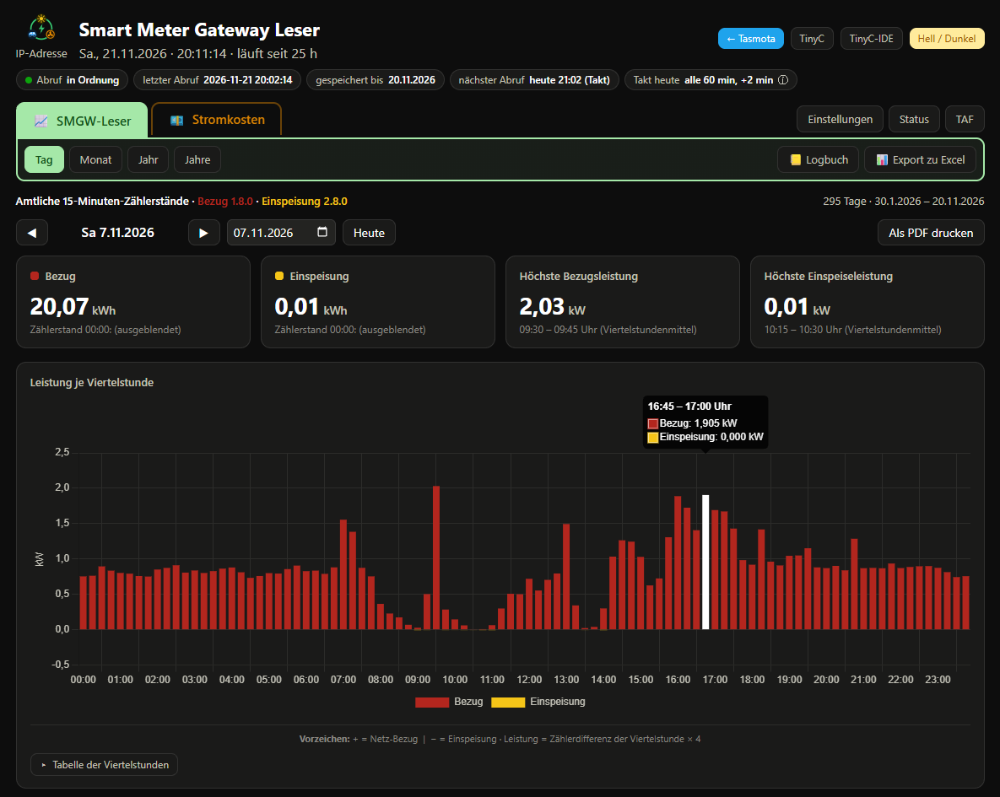
/smgw, Reiter „Tag“: Tageswerte und Leistung je Viertelstunde (Bezug rot nach oben, Einspeisung gelb nach unten), die Maus steht auf dem Balken 16:45 – 17:00 Uhr (ab 1.2.0 weiß markiert); darüber die Karteireiter „SMGW-Leser“ und „Stromkosten“, rechts „Logbuch“ und „Export zu Excel“, rechts oben der Knopf „Als PDF drucken“. Adresse des Lesers und Zählerstände für das Bild ausgeblendet.Warum wir das gemacht haben. Beim Einrichten eines frischen Lesers am 16.11.2026 zeigte sich: Ein Tasmota-Gerät ohne „Passwort für Weboberfläche“ steht jedem offen, der im selben Netz ist – einem Gäste-Handy, einem befallenen PC, einem smarten Gerät mit Sicherheitslücke. Der kann über die Seite die Zugangsdaten zum Gateway ändern, über den Tasmota-Dateimanager die .secret-Dateien samt Passwort herunterladen und ein eigenes Programm in einen Slot laden, das beim nächsten Start alles lesen kann. Schlimmer noch: Selbst mit gesetztem Webpasswort ließen sich bis dahin Programme, /tinyc.cfg und Seiten über die TinyC-Wege (Hochladen aus der IDE, Port 83) ohne Anmeldung austauschen – die Passwortprüfung kam zu spät bzw. gar nicht.
Was jetzt gilt (Firmware ab 16.11.2026, Leser 1.1.3):
curl braucht -u admin:<Passwort>.admin, das Passwort braucht mindestens 5 Zeichen (kürzere verwirft Tasmota ohne Meldung)..secret, also auch die Zählerdaten), siehe 6.3.Deshalb ist das Webpasswort in der Inbetriebnahme Schritt 3, noch vor WLAN, Zugangsdaten und Skripten (Abschnitt 5).
Ein frisch geflashter Leser kennt kein WLAN und hat kein Passwort. Er meldet sich als eigenes WLAN (Hotspot) SMGW (selbst gebaute Firmware ohne eigenen Namen: tasmota-…), ohne Passwort. Mit Handy oder PC dorthin verbinden und im Browser http://192.168.4.1 öffnen. Erst das Passwort, dann das WLAN – so ist das Gerät schon geschützt, wenn es zum ersten Mal ins Heimnetz kommt.
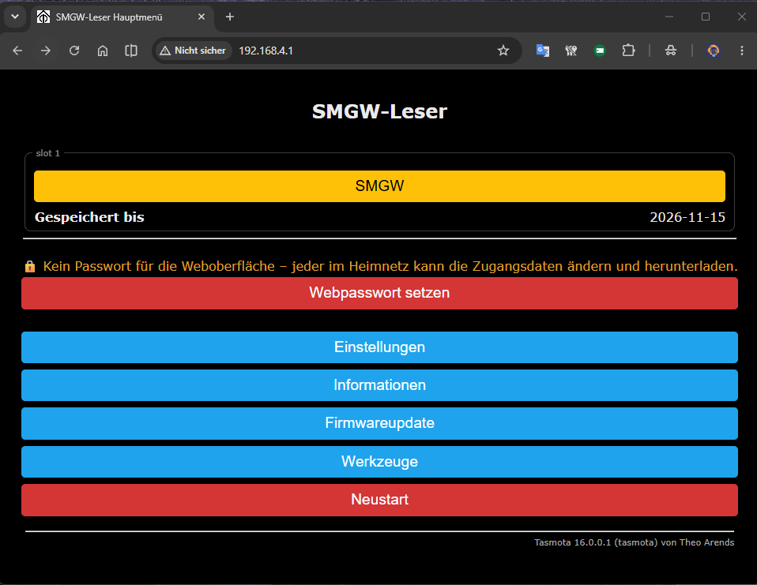
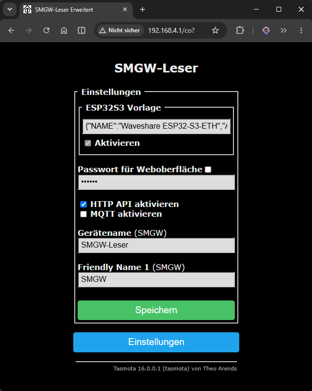
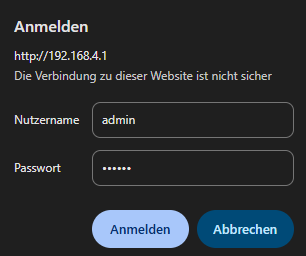
admin und das neue Passwort.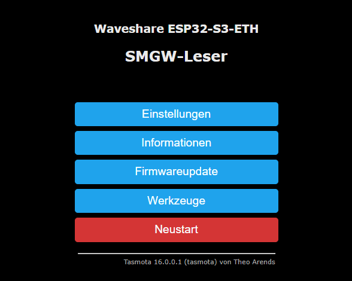
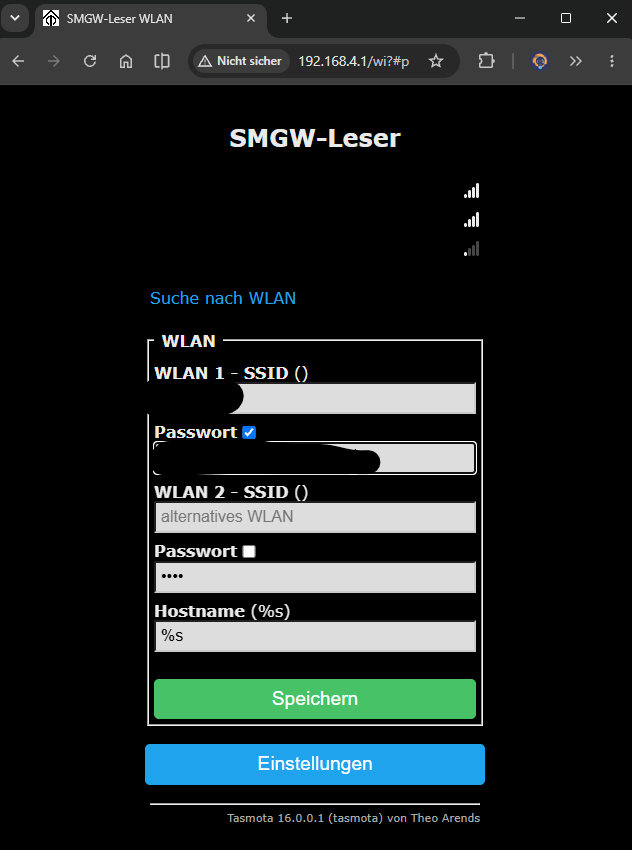
http://smgw.local/ erreichbar (oder Adresse im Router nachsehen, 3.1) – die Seite sieht aus wie in Bild 4. Weiter mit Abschnitt 5.Getestet sind zwei Boards von Waveshare. Beide haben LAN (zur HAN-Buchse), WLAN (ins Heimnetz) und einen Steckplatz für die SD-Karte. Der Leser braucht wenig: gemessen rund 0,3 MB PSRAM und gut 30 KB für das Skript; die Tagesseite des Gateways (rund 170 KB) wird in 1-KB-Stücken ausgewertet. Empfehlung: das ESP32-S3-ETH, der P4 ist für diese Aufgabe überdimensioniert.
| Teil | Angabe |
|---|---|
| Board | Waveshare ESP32-S3-ETH (SKU 28972); mit PoE-Modul als Satz ESP32-S3-POE-ETH (SKU 28771) Kaufen: https://www.waveshare.com/esp32-s3-eth.htm Wiki: https://www.waveshare.com/wiki/ESP32-S3-ETH |
| Prozessor | ESP32-S3R8 (Revision v0.2), 240 MHz |
| Speicher | 8 MB PSRAM, 16 MB Flash (am Gerät gelesen mit Status 4) |
| WLAN | im ESP32-S3 eingebaut (2,4 GHz), kein Zusatzchip, kein Update nötig |
| Ethernet | W5500 über SPI (EthType 8): RST GPIO 9, INT GPIO 10, MOSI GPIO 11, MISO GPIO 12, SCLK GPIO 13, CS GPIO 14 |
| SD-Karte | SPI: CS GPIO 4, MISO GPIO 5, MOSI GPIO 6, SCLK GPIO 7 (FAT32) |
| Strom | USB-C oder PoE (nur mit PoE-Modul). Am HAN-Anschluss: Strom über USB-C, normales Patchkabel direkt zum Gateway. |
| Gemessen 09.11.2026 | Erstabruf 283 Tage in 39 min; danach frei: Arbeitsspeicher 218 KB, größter Block 164 KB, PSRAM 7,7 von 8 MB |
| Teil | Angabe |
|---|---|
| Board | Waveshare ESP32-P4-WIFI6-POE-ETH (SKU 32832) Kaufen: https://www.waveshare.com/esp32-p4-wifi6-poe-eth.htm?sku=32832 Wiki: https://www.waveshare.com/wiki/ESP32-P4-WIFI6-POE-ETH |
| Prozessor | ESP32-P4 (Revision v1.3), betrieben mit 360 MHz |
| Speicher | 32 MB PSRAM, 32 MB Flash (am Gerät gelesen mit Status 4) |
| WLAN | ESP32-C6 als Funkchip (ESP-Hosted über SDIO, GPIO 14–19, Reset GPIO 54). Firmware des C6 mindestens 2.12.6, siehe Abschnitt 4.4 |
| Ethernet | PHY IP101 (EthType 1), MDC GPIO 31, MDIO GPIO 52, Reset GPIO 51, Takt GPIO 50; Versorgung auch über PoE möglich |
| SD-Karte | SDIO 4-Bit: D0–D3 = GPIO 39–42, CLK = GPIO 43, CMD = GPIO 44 (FAT32) |
| Strom | USB-C oder PoE. Wichtig: Kommt der Strom nur über PoE, ist das Board ohne LAN-Kabel aus. |
| Schaltplan | files.waveshare.com/wiki/ESP32-P4-WIFI6-POE-ETH/ESP32-P4-WIFI6-POE-ETH-Schematic.pdf |
Der SMGW-Leser hängt an zwei Netzen gleichzeitig:
| Anschluss | Netz | Zweck |
|---|---|---|
| LAN | direkt (oder über einen eigenen Switch) an der HAN-Buchse des Gateways, feste Adresse im Netz der HAN-Schnittstelle, ohne Gateway und DNS | nur der Abruf beim SMGW |
| WLAN | Heimnetz (Adresse per DHCP, am besten im Router fest zuweisen) | Bedienung, Seite, Uhrzeit (NTP), FTP-Sicherung, Excel |
Vorgabe für die Gateway-Adresse (PPC): https://192.168.1.200:443/cgi-bin/hanservice.cgi. Welche Adresse das eigene Gateway an der HAN-Buchse hat, steht in den Unterlagen des Messstellenbetreibers. Der Leser selbst hat ab Werk keine feste LAN-Adresse (DHCP). An der HAN-Buchse gibt es aber keinen DHCP-Server – die LAN-Adresse des Lesers muss man deshalb einmal selbst eintragen, eine freie Adresse im Netz des Gateways, beim PPC z. B. 192.168.1.21 / 255.255.255.0 (5.4).
Ändern ohne neue Firmware: Reiter Einstellungen → Gateway (HAN-Schnittstelle). „Adresse des Gateways“ als ganze Adresse mit Port und Pfad eintragen (fehlen sie, gelten 443 und /cgi-bin/hanservice.cgi); „Leser im LAN“ ist eine freie Adresse im selben Netz. Ändert sich die LAN-Adresse, startet der Leser einmal neu; über das WLAN bleibt er erreichbar. In der Konsole geht dasselbe mit SMGWHost, SMGWPort, SMGWPfad bzw. EthIPAddress.
Wer den Leser bei jemand anderem einbaut, muss ihn danach in dessen Heimnetz wiederfinden – oft ohne Zugang zum Router. Dafür gibt es mehrere Wege:
| Weg | So geht es | Grenzen |
|---|---|---|
| A. Hotspot beim Einrichten | Ein Leser ohne WLAN-Daten öffnet ein eigenes WLAN (SMGW, selbst gebaut ohne eigenen Namen tasmota-…). Mit dem Handy verbinden, http://192.168.4.1 öffnen, das WLAN eintragen. Nach dem Speichern zeigt Tasmota die neue Adresse im Heimnetz an – gleich notieren. | nur in diesem Moment; nur wenn keine WLAN-Daten in die Firmware gebaut sind |
| B. Name im Netz | http://smgw.local/ im Browser (mDNS). Die fertige Firmware kann das ab Werk. Selbst gebaut: mit USE_DISCOVERY und WEBSERVER_ADVERTISE (Abschnitt 4.3) und auf dem Gerät SetOption55 1. Im Log steht beim Start mDN: initialisiert 'SMGW.local' (englische Firmware: mDN: Initialized 'SMGW.local'). | nur im selben Netz wie der Leser (nicht über einen Router hinweg, nicht im Gäste-WLAN); geht am PC, Mac und Android-Handy (Test 13.11.2026). Wichtig: Ersetzt der Leser ein anderes Gerät mit demselben Namen (z. B. einen früheren Leser), den alten Eintrag in der FRITZ!Box löschen (Heimnetz → Netzwerk → „Ungenutzte Verbindungen“ → Mülleimer). Sonst finden Android-Geräte smgw.local nicht (Chrome: „Die Website ist nicht erreichbar“, DNS_PROBE_FINISHED_NXDOMAIN), der Mac erst nach etwa einer Minute, und smgw.fritz.box zeigt ins Leere. |
| C. Router | Wer den Router sieht: Der Leser meldet sich mit seinem Hostnamen SMGW an (FRITZ!Box: Heimnetz → Netzwerk, dort am besten „immer dieselbe IP zuweisen“). Dann geht meist auch http://smgw.fritz.box/. | braucht Zugang zum Router |
| D. USB | Leser per USB-C an den PC, serielle Konsole (115200 Baud, z. B. Tasmota-Webinstaller → Logs, oder ein Terminalprogramm), dort Status 5: zeigt WLAN- und LAN-Adresse. | PC mit USB nötig |
smgw.local ist der bequeme Weg für später, D (USB) ist der Notweg, der immer funktioniert. Die LAN-Buchse des Lesers ist fest mit dem Gateway verbunden, ins Heimnetz geht der Leser nur über WLAN – nur so kommt er an das Gateway. Über die LAN-Buchse lässt sich der Leser deshalb nicht wiederfinden.tinyc32s3-eth-smgw:https://github.com/gemu2015/Sonoff-Tasmota/releases/tag/testingtinyc32s3-eth-smgw.factory.bin (erstes Flashen per USB) und tinyc32s3-eth-smgw.bin (spätere Updates über „Firmwareupdate“), siehe 4.5. Die Firmware enthält alles aus 4.3 und nichts Persönliches: kein WLAN, kein MQTT, kein Standort, keine feste Adresse (LAN und WLAN per DHCP) und keinen FTP-Server. Ab Werk gesetzt sind der Name SMGW (Hotspot und http://smgw.local/), mDNS, „HTTP API aktivieren“ und der Hinweis „Webpasswort setzen“. Weiter mit 4.5 und Abschnitt 5; 4.1 bis 4.3 kann man dann überspringen.Selbst bauen muss man nur für den ESP32-P4 oder wenn man etwas an der Firmware ändern will. Env und Geräteblock der fertigen Firmware liegen als Vorlage im Repository unter tasmota/tinyc/docs/smgw/firmware/.
universal, gebaut mit PlatformIO:tasmota/tinyc/README_DE.md und TinyC_Reference_DE.md im selben Repository; fertige Firmware und IDE unter https://github.com/gemu2015/Sonoff-Tasmota/releases (für das ESP32-S3-ETH die fertige tinyc32s3-eth-smgw, siehe oben).universal ab 18.11.2026 (ab dann ist TC_MAX_FILE_HANDLES einstellbar, 4.3); mindestens TinyC 1.6.78, Stand ab 12.11.2026 (der Stand vom 11.11. heißt auch 1.6.78, kennt aber den Befehl TinyCTlsGueltig aus Abschnitt 9.5 noch nicht; ohne ihn schreibt Slot 0 nur eine Logzeile). Ältere Firmware lädt slot2-smgwkosten zwar, findet aber die Börsenpreise nicht (Fehler in TinyC bei Zeichenketten als Parameter, in 1.6.78 behoben). Slot 0 und Slot 1 laufen auch mit älterem Stand.TC_TLS_RX_BUF überschreibbar (#ifndef) – in universal enthalten.tc_tls->setRSAOnly(false); in SYS_TLS_CONNECT – in universal enthalten. Ohne sie bietet tlsConnect nur ECDHE-RSA an, das Gateway (nur ECDSA) bricht den Aufbau sofort ab.TinyCTlsCert <Zertifikatsdatei> <Schlüsseldatei> (TinyCTlsCert 0 = aus) in xdrv_124_tinyc.ino / xdrv_124_tinyc_vm.h; tlsConnect zeigt das Zertifikat dann vor, wenn der Server danach fragt. Dazu in tls_mini (WiFiClientSecureLightBearSSL.cpp): Client-Schlüssel nur setzen, wenn wirklich ein Zertifikat gesetzt ist, und P-256 und P-384 erlauben. Wer nur Benutzer/Passwort nutzt, braucht diesen Teil nicht. Wirkt nur in einer Firmware mit USE_MQTT_CLIENT_CERT (Abschnitt 4.3); ohne den Schalter antwortet der Befehl ab 09.11.2026 {"TinyCTlsCert":{"loaded":0,"error":"needs USE_MQTT_CLIENT_CERT"}}.platformio_override.ini)ESP32-S3-ETH: W5500 braucht die SDK-Einstellungen in custom_sdkconfig.
[env:tasmota32s3-waveshare-ETH_SMGW_TinyC]
extends = env:tasmota32_base
board_build.f_cpu = 240000000L
board_build.mcu = esp32s3
board = esp32s3_16M
build_flags = ${env:tasmota32_base.build_flags}
-DUSE_ETHERNET
-DTINYC_TESTING
-DTINYC_NO_SCRIPTER
-DUSE_BINPLUGINS
lib_extra_dirs = ${common.lib_extra_dirs}
lib/libesp32
lib/libesp32_div
lib_ignore = ${env:tasmota32_base.lib_ignore}
TTGO TWatch Library
Micro-RTSP
epdiy
esp32-camera
lib/libesp32/CORE2_Library
libesp32_lvgl
custom_sdkconfig = CONFIG_ETH_ENABLED=y
CONFIG_ETH_USE_SPI_ETHERNET=y
CONFIG_ETH_SPI_ETHERNET_W5500=y
CONFIG_LWIP_UDP_RECVMBOX_SIZE=64
CONFIG_MBEDTLS_SHA512_C=y
CONFIG_FREERTOS_IDLE_TASK_STACKSIZE=3072
custom_component_remove = espressif/esp32-camera
espressif/esp_jpg
espressif/fb_gfx
espressif/esp-dsp
espressif/esp_modem
espressif/network_provisioning
upload_port = COMx ; eigenen Anschluss eintragen
upload_speed = 460800
ESP32-P4-WIFI6-POE-ETH:
[env:tasmota32p4-waveshare-WIFI6_SMGW_TinyC]
extends = env:tasmota32_base
board_build.f_cpu = 360000000L
board_build.mcu = esp32p4
board = esp32p4
build_flags = ${env:tasmota32_base.build_flags}
-DUSE_ETHERNET
-DTINYC_TESTING
-DTINYC_NO_SCRIPTER
-DUSE_BINPLUGINS
lib_ignore = ${env:tasmota32_base.lib_ignore}
Micro-RTSP
Homekit
esp-nimble-cpp
esp32-camera
JPEG decode
upload_port = COMx ; eigenen Anschluss eintragen
Kein custom_sdkconfig und keine zusätzlichen Bibliotheksordner: Jede dieser Stellschrauben bricht beim P4 die ESP-Hosted-Kette für das WLAN. Das passende Env in default_envs eintragen. Das Gerät wird nur über den Block in user_config_override.h gewählt, nicht über ein -D im Env.
user_config_override.h)Ein eigener Block je Board, ausgewählt mit #define esp32S3_waveshare_ETH_SMGW_TinyC bzw. #define esp32p4_waveshare_WIFI6_SMGW_TinyC. Die wichtigen Zeilen (P4; Unterschiede beim S3 darunter):
#define DISABLE_REFERER_CHK // "HTTP API aktivieren" ab Werk
#define CFG_HOLDER 4641 // eigener Wert -> frische Grundeinstellungen
#define USER_BACKLOG "SetOption55 1; Restart 1" // mDNS an; KEINE feste LAN-Adresse (5.4)
#undef MQTT_TOPIC
#define MQTT_TOPIC "SMGW" // Name des Lesers: Hotspot SMGW, http://smgw.local/
#define DEVICE_NAME "SMGW-Leser"
#define FRIENDLY_NAME "SMGW"
#undef WIFI_DEFAULT_HOSTNAME
#define WIFI_DEFAULT_HOSTNAME "%s" // Hostname = MQTT-Topic, z. B. "SMGW" (immer mit %s!)
#define USE_DISCOVERY // mDNS: Leser unter http://smgw.local/ finden
#define WEBSERVER_ADVERTISE // Webseite per mDNS bekannt geben
#define TC_VM_TASK_STACK 16384 // TLS-Aufbau im Skript braucht Stapel
#define TC_TLS_RX_BUF 16709 // volle TLS-Paketgroesse (16384 + 325)
#define USE_MQTT_CLIENT_CERT // nur fuer TinyCTlsCert: sonst schickt tls_mini nie ein Client-Zertifikat
#define TC_MAX_HEAP 32768
#define TC_MAX_HEAP_HANDLES 256
#define TC_MAX_FILE_HANDLES 8 // offene Dateien aller Slots zusammen (Vorgabe 4 reicht nicht)
#define USE_WEBCLIENT_HTTPS
#undef USE_FTP // KEIN FTP-Server (die Sicherung ist der FTP-Client im Skript)
#define USE_SDCARD
#define USE_UFILESYS
#define USE_ETHERNET
#undef ETH_TYPE // ETH_* sind ab Werk schon gesetzt -> erst #undef
#define ETH_TYPE 1 // IP101
#undef ETH_ADDRESS
#define ETH_ADDRESS 1
#undef ETH_CLKMODE
#define ETH_CLKMODE 0
#undef MY_LANGUAGE
#define MY_LANGUAGE de_DE // Menues und Log deutsch wie in dieser Anleitung
#define USER_TEMPLATE "{\"NAME\":\"Waveshare ESP32-P4-WIFI6-POE-ETH\", ... }"
TC_MAX_FILE_HANDLES 8. Die Zahl gilt für alle Slots zusammen; die Vorgabe 4 reicht nicht, wenn Slot 0 einen Tag speichert, während Slot 2 Börsenpreise lädt – dann bekommt Slot 0 keine Monatsdatei („SD: Monatsdatei nicht beschreibbar“; seit Slot 0 1.1.2 geht dabei kein Tag mehr verloren, er wird nur später geholt). Einstellbar ist der Wert ab Stand universal vom 18.11.2026; die SD-Karte bekommt dann automatisch genug Plätze. Geprüft 19.–21.11.2026: von 9 gleichzeitig geöffneten Dateien 8 offen, Tageswechsel ohne Fehler.USER_BACKLOG schaltet beim ersten Start nur mDNS ein (nur bei frischen Einstellungen, also neuem CFG_HOLDER) und startet einmal neu.#undef USE_FTP): Wer angemeldet UfsFTP 1 eingibt, öffnet ihn dauerhaft, auch nach einem Neustart, unverschlüsselt und mit dem eingebauten Zugang – und über ihn sind alle Dateien lesbar, auch die .secret-Dateien mit den Zugangsdaten. Port 82 sperrt die, der FTP-Server nicht. Gebraucht wird er nicht: Die nächtliche Sicherung (9.2) ist der FTP-Client im Skript, der hängt nicht von USE_FTP ab."%s" ergibt als Hostnamen das MQTT-Topic, ohne Chip-Nummer. Das Topic setzt MQTT_TOPIC "SMGW" ab Werk (auf einem schon eingerichteten Gerät in der Konsole Topic SMGW); im Router dann z. B. http://smgw.fritz.box/. Nie einen festen Text ohne % eintragen (Absturz beim Start bei gespeicherten Namen mit %).USE_DISCOVERY und WEBSERVER_ADVERTISE machen den Leser unter http://smgw.local/ erreichbar (Abschnitt 3.1). Steht weiter oben in der eigenen user_config_override.h ein allgemeines #undef USE_DISCOVERY, muss der Geräteblock danach kommen. Eingeschaltet wird es mit SetOption55 1 – ab Werk über USER_BACKLOG, auf einem schon eingerichteten Gerät einmal in der Konsole.DEVICE_NAME "SMGW-Leser", FRIENDLY_NAME "SMGW" – auch auf dem P4, damit der Leser überall gleich heißt. Diese Namen wirken nur bei frischen Einstellungen (neuer CFG_HOLDER); auf einem schon eingerichteten Gerät in der Konsole DeviceName SMGW-Leser und FriendlyName1 SMGW.ETH_TYPE 8 (W5500), ETH_ADDRESS 1, ETH_CLKMODE 0 und als Vorlage {"NAME":"Waveshare ESP32-S3-ETH","GPIO":[0,0,0,0,6721,673,705,737,0,5536,5600,704,672,736,5568,0,…],"FLAG":0,"BASE":1} (LAN- und SD-Pins aus Abschnitt 2.1). Alles andere wie oben. Hängen zwei Leser am selben HAN-Netz (z. B. zum Vergleich), braucht jeder eine eigene LAN-Adresse (z. B. .1.21 und .1.22), und es darf immer nur einer abrufen.STA_SSID1 / STA_PASS1 oder später über die Weboberfläche). Sie gehören nicht in veröffentlichte Dateien.Neue Boards kommen mit C6-Firmware 0.0.6. Damit hängt jede Abfrage der WLAN-Betriebsart rund 5 s, das ganze Gerät wird träge. Einmalig in der Tasmota-Konsole:
HostedOta https://ota.tasmota.com/tasmota32/coprocessor/network_adapter_esp32c6.bin
Nach etwa einer Minute meldet das Gerät „Successful. Restarting“. Prüfen mit Status 2: "HostedMCU":{"Hardware":"esp32c6","Version":"2.12.6"}.
Fertige wie selbst gebaute Firmware gibt es als zwei Dateien (fertig: tinyc32s3-eth-smgw.factory.bin und tinyc32s3-eth-smgw.bin; selbst gebaut: firmware.factory.bin und firmware.bin). Welche man nimmt, entscheidet, ob die Einstellungen erhalten bleiben:
| Datei | Wofür | Wie | Einstellungen (WLAN, Webpasswort, Gerätename …) |
|---|---|---|---|
firmware.factory.bin | Erstinstallation auf einem neuen oder gebrauchten Board | per USB: erst ganz löschen, dann schreiben, z. B. esptool --chip esp32s3 erase-flash und esptool --chip esp32s3 write-flash 0x0 tinyc32s3-eth-smgw.factory.bin (ältere esptool: erase_flash / write_flash) oder ein Web-Flasher im Browser (z. B. https://espressif.github.io/esptool-js/: „Erase Flash“, dann Adresse 0x0) | werden zurückgesetzt – das Gerät startet wie neu: Hotspot SMGW, Hinweis „Webpasswort setzen“ (1.1) |
firmware.bin | Update eines laufenden Lesers | Tasmota-Hauptseite → Firmwareupdate → Datei hochladen (OTA) | bleiben erhalten |
Warum die factory.bin die Einstellungen löscht: Sie beginnt bei Adresse 0x0 und reicht über den Bereich nvs (ab 0x9000), in dem Tasmota seine Einstellungen ablegt. Beobachtet am 16.11.2026: nach dem Aufspielen per USB kein WLAN und kein Webpasswort mehr. Die SD-Karte bleibt in beiden Fällen unberührt – Zählerdaten, Tarifblätter, eigene Werte, Zugangsdaten zum Gateway und die Slot-Programme sind danach noch da.
firmware.bin über „Firmwareupdate“. Nach einem Update die IDE nicht über „IDE aktualisieren“ holen (5.2).So wie hier beschrieben am 25.11.2026 mit der fertigen Firmware auf einem frischen ESP32-S3-ETH und einer leeren SD-Karte durchgespielt.
tinyc32s3-eth-smgw.factory.bin per USB, vorher den Flash ganz löschen (4.5). Selbst gebaut: firmware.factory.bin. Das setzt alle Einstellungen zurück – beim ersten Mal gewollt. Spätere Versionen nur noch als .bin über „Firmwareupdate“, dann bleiben WLAN und Webpasswort erhalten.SMGW (ohne Passwort; selbst gebaute Firmware ohne eigenen Namen: tasmota-…). Handy oder PC mit diesem WLAN verbinden (das Handy meldet ggf. „kein Internet“ – trotzdem verbunden bleiben) und im Browser http://192.168.4.1 öffnen. Erscheint der Hotspot nicht, das Gerät kurz stromlos machen und eine Minute warten.**** ganz löschen, dann das neue Passwort eingeben (Häkchen daneben zeigt es zur Kontrolle an).admin (fest in Tasmota) und das eben gesetzte Passwort.Wie das Schritt für Schritt aussieht: Abschnitt 1.1 (mit Bildern).
http://smgw.local/ erreichbar; die Adresse im Router nachsehen und, wenn möglich, fest zuweisen (3.1).UFS: SDCard mounted.smgw.html.gz, tinyc_ide.html.gz und, nur mit Stromkosten, smgw_kosten.html.gz (5.2).slot0-smgw in Slot 0, slot1-smgwweb in Slot 1 und, nur mit Stromkosten, slot2-smgwkosten in Slot 2; danach in /tc bei jedem Slot Autostart „A“ grün (5.3).http://smgw.local/smgw, Reiter Einstellungen (5.4).SMGWAbruf. Im Log erscheinen SMG:-Zeilen. Er dauert lange – rund eine Stunde bei gut neun Monaten Messwerten (Abschnitt 7); den Stand zeigt /smgw oben. Bei einem Fehler nicht sofort wiederholen, sondern erst das Log lesen (Sperre, Abschnitt 7). Auf der Tasmota-Hauptseite sieht man den Unterschied vorher/nachher (Bilder unten).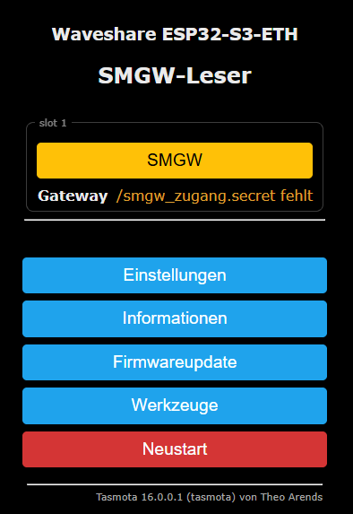
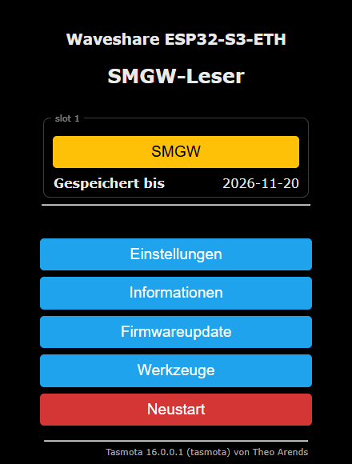
Alle Dateien für den Leser liegen in Gerhards Repository im Ordner tasmota/tinyc/docs/smgw/:
https://github.com/gemu2015/Sonoff-Tasmota/tree/universal/tasmota/tinyc/docs/smgw
Herunterladen: am einfachsten über die direkten Links unten (Präfix https://raw.githubusercontent.com/gemu2015/Sonoff-Tasmota/universal/tasmota/tinyc/). Die .gz-Dateien lädt der Browser gleich herunter; die .tc-Dateien zeigt er als Text an – dann mit Rechtsklick → „Link speichern unter …“ speichern. Oder auf GitHub die Datei anklicken und rechts oben „Download raw file“ (Pfeil nach unten). Alle Dateien in einem eigenen Ordner am PC sammeln.
.tc oft .txt an (aus slot0-smgw_1.1.6.tc wird slot0-smgw_1.1.6.tc.txt). Im Explorer unter „Ansicht → Dateinamenerweiterungen“ einschalten und das .txt wieder entfernen.A. Auf die SD-Karte – über Werkzeuge → Dateisystem verwalten (5.2), genau diese Namen, ins Hauptverzeichnis:
| Datei | Direkter Link (an das Präfix anhängen) | |
|---|---|---|
smgw.html.gz (Leserseite) | docs/smgw/smgw.html.gz | nötig |
tinyc_ide.html.gz (TinyC-IDE mit Webpasswort-Abfrage) | tinyc_ide.html.gz (eine Ebene über docs/) | nötig |
smgw_kosten.html.gz (Kostenseite) | docs/smgw/smgw_kosten.html.gz | nur mit Stromkosten (11) |
B. In die Slots – über die TinyC-IDE (5.3); die Dateien bleiben auf dem PC, die IDE übersetzt sie und lädt das Programm in den Slot:
| Datei | Slot | Direkter Link (an das Präfix anhängen) | |
|---|---|---|---|
slot0-smgw_1.1.6.tc (Abruf) | 0 | docs/smgw/slot0-smgw_1.1.6.tc | nötig |
slot1-smgwweb_1.1.0.tc (Seiten) | 1 | docs/smgw/slot1-smgwweb_1.1.0.tc | nötig |
slot2-smgwkosten_1.1.1.tc (Kosten) | 2 | docs/smgw/slot2-smgwkosten_1.1.1.tc | nur mit Stromkosten (11.1) |
C. Nicht aufs Gerät: die ungepackten smgw.html und smgw_kosten.html (lesbare Quelle, siehe unten), diese Anleitung, README.md, VERSION-….txt, die Excel-Musterdatei und der Ordner quellen/. Die Prüfsummen (md5) aller Dateien stehen in VERSION-….txt.
Warum gibt es jede Seite zweimal? smgw.html.gz ist dieselbe Seite wie smgw.html, nur gepackt (etwa ein Drittel so groß, lädt schneller). Das Gerät liefert immer die .gz aus; die ungepackte .html nimmt es nur, wenn keine .gz da ist. Auf die SD-Karte gehört deshalb nur die .gz. Die .html liegt im Repository als lesbare Quelle – zum Ansehen oder für eigene Änderungen; danach neu packen mit gzip -9 -k -n smgw.html und die .gz hochladen. Achtung: Liegen beide auf der Karte, zeigt das Gerät immer die .gz – eine neuere .html daneben bleibt unbeachtet.
Nicht herunterladen, entsteht auf dem Gerät: die Zugangsdaten (/smgw_zugang.secret, über die Seite, Abschnitt 6), die Einstellungen (/smgw_cfg.txt) und alle Messwerte (Abschnitt 8).
Auf die SD-Karte gehören smgw.html.gz und, falls noch nicht vorhanden, die TinyC-IDE tinyc_ide.html.gz, beide ins Hauptverzeichnis der Karte. Nur wenn die Kostenrechnung gewünscht ist (Abschnitt 11), zusätzlich smgw_kosten.html.gz. Die ungepackten .html braucht das Gerät nicht (Abschnitt 5.1). Beim ersten Einrichten zuerst diese Dateien, dann die Skripte – die IDE für 5.3 kommt selbst von der SD-Karte. Drei Wege, der erste ist der übliche:
-u antwortet das Gerät „401 web password required“:
curl -u admin:<Passwort> --data-binary @smgw.html.gz http://<Gerät>:83/ufs/sdfs/smgw.html.gzPrüfen durch Zurücklesen über Port 82 (
http://<Gerät>:82/ufs/sdfs/smgw.html.gz) und Vergleich der Prüfsumme (md5) mit der Datei am PC.TinyCIde oder dem Knopf „IDE aktualisieren“ holen. Beide laden die allgemeine TinyC-IDE aus dem Internet. Der fehlt (Stand 16.11.2026) die Abfrage des Webpassworts: Mit gesetztem Passwort meldet sie beim Hochladen nur „HTTP 401“ bzw. „Failed to fetch“. Wer es doch getan hat: tinyc_ide.html.gz aus den Dateien des SMGW-Lesers wieder hochladen (Dateimanager), dann die IDE mit Strg+F5 neu laden.http://smgw.local/tc öffnen und Open IDE klicken (oder direkt http://smgw.local:82/ide). Die IDE kommt von der SD-Karte (5.2).slot0-smgw_1.1.6.tc vom PC öffnen und Upload klicken. Die IDE übersetzt das Skript und lädt das Programm in den Slot; die Ausgabe links endet mit „WiFi upload OK! … bytes loaded on device“.slot1-smgwweb_1.1.0.tc und, nur mit Stromkosten, Slot 2 mit slot2-smgwkosten_1.1.1.tc. Vor jedem Upload den richtigen Slot wählen – ein Upload ersetzt, was im Slot war./tc bei jedem Slot Autostart einschalten: Knopf „A“ rechts in der Zeile des Slots, er wird grün. Ohne Autostart laufen die Slots nach einem Neustart nicht wieder an./tc hat jeder Slot einen grünen Punkt (läuft) und ein grünes „A“ (Bild). Im Log stehen SMG: SMGW-Leser 1.1.6 startet …, SMG: Gateway https://… und SMG-Web: 1.1.0 bereit …. In der Konsole zeigt TinyC alle Slots; Slot 1 steht dabei auf Running 0, das ist richtig (er wartet nur auf Seitenaufrufe).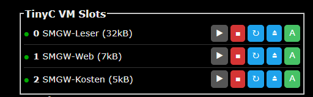
/tc nach dem Laden: alle drei Slots mit grünem Punkt (läuft) und grünem „A“ (Autostart an). So muss es aussehen.smgw.local (Stand 25.11.2026, an Gerhard gemeldet): Öffnet man die IDE über den Namen, blendet sie „✕ Schließen“ nicht ein; über die Zahlen-Adresse (http://<Adresse>:82/ide, Adresse aus dem Router) ist er da. Hochladen geht in beiden Fällen. Ohne den Knopf den Tab einfach schließen. Die Zeile „No device reachable“ nach „Compile“ kann man ebenfalls übergehen, wenn der Upload danach klappt.Ein neues Skript ersetzt das alte im Slot; die Einstellungen (Takt, Abstand, FTP-Uhrzeit) stehen in /smgw_cfg.txt und bleiben erhalten, ebenso Zugangsdaten und Messwerte.
Ab Werk hat der Leser im LAN keine feste Adresse, weil nicht jedes Gateway im Netz 192.168.1.x liegt. An der HAN-Buchse gibt es keinen DHCP-Server, also trägt man die Adresse einmal selbst ein:
http://smgw.local/smgw öffnen, Reiter Einstellungen, Kachel Gateway (HAN-Schnittstelle).https://192.168.1.200:443/cgi-bin/hanservice.cgi (PPC). Bei einem anderen Gateway die Adresse aus den Unterlagen des Messstellenbetreibers eintragen.192.168.1.21. Netzmaske meist 255.255.255.0.EthIPAddress sie ohne Klammer (mit Klammer, z. B. 0.0.0.0 (…), ist noch keine feste Adresse gesetzt).In der Konsole geht dasselbe mit SMGWHost und Backlog EthIPAddress 192.168.1.21; EthSubnetmask 255.255.255.0; EthGateway 0.0.0.0; Restart 1. Mehr zum Netz: Abschnitt 3.
.secret auf der SD-Karte des Geräts. Sie gehören nicht in die Firmware, nicht in ein Skript, nicht ins Repo, nicht in Briefe, Foren oder Bildschirmfotos.Reiter Einstellungen, goldene Kachel 🔒 Zugangsdaten der HAN-Schnittstelle: Benutzer und Passwort aus den Unterlagen des Messstellenbetreibers eintragen, Zugang speichern.
/smgw_zugang.secret: Zeile 1 Benutzer, Zeile 2 Passwort, Zeile 3 Identifikationsnummer (optional). Wer will, kann die Datei auch am PC anlegen und per Kartenleser kopieren (reiner Text, je höchstens 95 Zeichen, Platzhalter-Beispiel: BENUTZERNAME-HAN / PASSWORT-HAN).Manche Messstellenbetreiber geben statt Benutzer/Passwort ein Zugangszertifikat aus: eine Datei .p12 oder .pfx mit Passwort. In derselben Kachel: Datei auswählen, Passwort der Datei eintragen, Zertifikat laden.
/smgw_cert.secret (Zertifikat, DER als Hex) und /smgw_key.secret (Kurve, Schlüssel, Ablaufdatum). Die Seite zeigt nur „gespeichert · Kurve · gültig bis …“.TinyCTlsCert und zeigt es vor, wenn das Gateway danach fragt. Antwortet das Gateway gleich mit 200 (Cookie + Token), gilt das als angemeldet; fragt es trotzdem nach Digest, werden Benutzer/Passwort aus 6.1 benutzt.TinyCTlsCert 0.*.secret für alle TinyC-Dateiwege übers Netz: nicht herunterladen (Port 82), nicht hochladen/überschreiben (Port 83), nicht über die TinyC-Schnittstelle. Nur die Skripte auf dem Gerät lesen sie..secret-Datei mit..secret-Dateien samt Passwort herunterladen. Gesperrt sind sie nur auf den Wegen von TinyC (Port 82/83). Deshalb in Tasmota unter Einstellungen → Erweitert ein „Passwort für Weboberfläche“ setzen (mindestens 5 Zeichen; Anmeldung danach mit Benutzername admin). Die SMGW-Firmware erinnert daran: Ohne Passwort zeigt die Hauptseite einen Hinweis mit rotem Knopf „Webpasswort setzen“ (Abschnitt 5, Schritt 3). Wer die SD-Karte in der Hand hat, kann die Dateien lesen./tinyc.cfg und Seiten lassen sich nur noch angemeldet austauschen – über die IDE (fragt nach dem Passwort), den Dateimanager oder Port 83 mit curl -u admin:<Passwort>. Vorher konnte jeder im Heimnetz über /tc_upload oder Port 83 ein eigenes Programm einspielen, das beim nächsten Start die .secret-Dateien liest. Ohne Webpasswort bleibt alles offen wie bisher.*.secret, also auch die Zählerdaten. Ebenso die Leserseiten von Slot 1 – /smgw, /smgwj (Status) und /smgwf (Zählerdaten) – auch mit Webpasswort (geprüft 21.11.2026). Befehle (/cm), Konsole, Dateimanager und Hochladen brauchen die Anmeldung. Wer das Lesen nicht will, sperrt Port 82 im Router für andere Geräte oder betreibt den Leser in einem eigenen Netz.| Schritt | Anfrage an das Gateway |
|---|---|
| 0 | TLS 1.2 (ECDHE-ECDSA, P-256, Port 443); ist ein Zertifikat geladen, wird es vorgezeigt, wenn das Gateway danach fragt |
| 1 | GET /cgi-bin/hanservice.cgi → 401 mit Digest-Nonce (bei Zertifikats-Anmeldung gleich 200) |
| 2 | dasselbe mit Authorization: Digest (MD5) → 200, Cookie session, Token tkn |
| 3 | POST tkn=…&action=meterform → Zählerkennung mid |
| 4 | je Tag POST tkn=…&action=showMeterValues&mid=…&from=TAG&to=TAG (je Antwort ein neues Token) |
| 5 | einmal am Tag (erste erfolgreiche Sitzung): action=swversions (Software-Versionen) und action=tariffform (Auswertungsprofile = freigeschaltete TAF). Nur lesen; scheitert das, zählt der Abruf trotzdem als gelungen. |
| 6 | POST tkn=…&action=logout |
SMG: N Tage ohne Zaehlerdaten uebersprungen (… bis …). Je Sitzung höchstens 400 Tage, die nächste Sitzung folgt sofort; ab dem ersten Messwert wird jeder Tag gespeichert."nach":1, solange Tage fehlen)./smgw oben: vor dem ersten Messwert „sucht erste Daten · geprüft bis …“, danach „gespeichert bis …“ (seit 1.1.2). Während des Abrufs das Gerät nicht neu starten und keine Skripte neu laden – sonst geht es zwar an derselben Stelle weiter, aber ein gerade geschriebener Tag kann abbrechen.| Datei | Inhalt |
|---|---|
/smgw_JJJJ-MM.txt | je Monat, eine Zeile je Viertelstunde:JJJJ-MM-TT hh:mm<TAB>Bezug 1.8.0<TAB>Einspeisung 2.8.0 (kWh) |
/smgw_tage.txt | je Tag: Datum, Bezug Anfang, Bezug Ende, Einspeisung Anfang, Einspeisung Ende, Anzahl Viertelstunden (Anfang = Zählerstand 00:00, Ende = letzter Zählerstand des Tages, normal 23:45; die Seiten nehmen für den Tagesverbrauch den Anfang des Folgetages) |
/smgw_heute.txt | wie eine Monatsdatei, nur der laufende Tag (nur bei eingeschaltetem Takt) |
/smgw_leer.txt | nur vor dem ersten Messwert: bis zu welchem Tag schon ohne Ergebnis gesucht wurde (nach einem Neustart geht es dort weiter); wird mit dem ersten Messwert gelöscht |
/smgw_status.txt | Zustand als JSON (Zugang, gespeichert bis, letzter Abruf, Fehler, nächster Versuch, Takt, Abstand, Gateway-Adresse, Zertifikat 0/1/2, FTP-Stand, Gateway-Firmware) – nie Zugangsdaten |
/smgw_cfg.txt | je eine Zeile (alle optional): takt <min>, versatz <min>, ftpzeit HH:MM, host <IP>, port <n>, pfad </…> |
/smgw_gw_fw.html, /smgw_gw_taf.html | die Gateway-Seiten „Software-Versionen“ und „Auswertungsprofil“ im Rohzustand (einmal am Tag, je höchstens 150 KB). Enthalten Kennungen des Gateways – nicht weitergeben. |
/smgw_gateway.json | Gültigkeit des TLS-Zertifikats des Gateways (von/bis in UTC), Seriennummer, nur die letzten 4 Stellen der Kennung, Lesedatum – schreibt slot0-smgw einmal am Tag (Abschnitt 9.5) |
/smgw_fw_verlauf.txt | (ab 1.1.5) Firmware-Verlauf des Gateways: je Versionswechsel eine Zeile „Datum · smgw-bootstream · smgw-services“ (Tabulator), schreibt Slot 0 beim täglichen Lesen der Firmware; bekannte ältere Stände von Hand ergänzbar (9.6) |
/smgw_logbuch.txt, /smgw_logbuch_heute.txt | (ab 1.1.5) Logbuch des Gateways, je Eintrag eine Zeile „Zeit · Stufe · ID · Status · Nachricht“ (Tabulator); ganze Tage bis gestern bzw. heute. Kennungen (Benutzer, Zählernummer, Gateway) sind ***, die Anmeldungen des Lesers fehlen. Entsteht nur über „Logbuch herunterladen“ (9.6). |
/smgw_logbuch_bis.txt | (ab 1.1.5) letzter vollständig geholter Tag des Logbuchs; das nächste Herunterladen beginnt am Tag danach |
/smgw_lbroh.secret | (ab 1.1.5) Rohantwort des Gateways beim Herunterladen des Logbuchs (mit Kennungen) – wird nach dem Herunterladen gelöscht; bleibt nur nach SMGWLogbuch action=… liegen |
/smgw_testtag.secret | Antwort des Gateways auf den letzten SMGWTestTag (9.4), roh; enthält die Zählerkennung – nicht weitergeben. Ab 1.1.4 mit Endung .secret: Port 82 gibt sie nicht ohne Anmeldung heraus; ansehen angemeldet im Tasmota-Dateimanager oder per Kartenleser (bis 1.1.3 hieß sie /smgw_testtag.html und war über Port 82 frei lesbar – Slot 0 1.1.4 löscht die alte Datei beim Start) |
/smgw_ftp.pos | Stand der FTP-Sicherung (erster noch offener Monat und Dateigrößen); löschen = beim nächsten Mal alles neu senden |
/smgw.html.gz | die Seite (gepackt). Eine ungepackte /smgw.html wird nur ausgeliefert, wenn keine .gz da ist; sie kann fehlen. Bei einer neuen Fassung die .gz ersetzen (Abschnitt 5.2) |
| Zugangsdaten: | |
/smgw_zugang.secret | Zugang HAN (Abschnitt 6.1) |
/smgw_cert.secret, /smgw_key.secret | Client-Zertifikat und Schlüssel (Abschnitt 6.2), nur wenn benutzt |
/smgw_ftp.secret | FTP-Zugang, 4 Zeilen: Server · Benutzer · Passwort · Zielordner (Abschnitt 9.2; wird über die Seite gesetzt) |
| Nur mit der Kostenrechnung (Slot 2, Abschnitt 11): | |
/smgw_kosten.html.gz | die Seite Stromkosten (gepackt), wie /smgw.html.gz |
/smgw_tarif.json | Preise und Einstellungen der Kostenseite (schreibt die Seite beim „Speichern“). Keine Zugangsdaten, aber persönliche Tarifdaten. Die vorige Fassung liegt als /smgw_tarif.bak daneben. |
/smgw_boerse_JJJJ-MM.txt | Börsenpreise je Monat, eine Zeile je Viertelstunde: JJJJ-MM-TT hh:mm<TAB>EUR/MWh (Ortszeit); sieben Kalenderjahre (laufendes Jahr und sechs davor), ältere löscht Slot 2. Für frühere Jahre auch selbst ablegbar (Abschnitt 11.7) |
/smgw_boerse_stand3.txt, /smgw_boerse_dl.json | Stand des Börsenabrufs („bis JJJJ-MM-TT“) und Zwischendatei des letzten Monatsabrufs. Löschen = alles einmal neu holen. |
/smgw_ergaenzung.txt | nur bei Bedarf: Zählerstände vor dem ersten Gateway-Wert (Abschnitt 11.6) |
Laden und Sichern der Dateien geht über die TinyC-Dateiports: lesen http://<Gerät>:82/ufs/sdfs/<Datei>, schreiben per HTTP-POST an http://<Gerät>:83/ufs/sdfs/<Datei> (mit Webpasswort: curl -u admin:<Passwort> …). Die .secret-Dateien sind dort gesperrt.
/smgw_tarif.json), eigene Werte (/smgw_eigen_JJJJ.txt) und die Zählerdaten liegen nur hier. Vor dem Löschen oder Formatieren der Karte alles sichern (Kartenleser oder FTP-Sicherung, 9.2)./smgw („Smart Meter Gateway Leser“): Kopf mit Adresse, Datum, Uhrzeit und Laufzeit, Knöpfe ← Tasmota, TinyC, TinyC-IDE, Hell/Dunkel. Anmelden / Abmelden (ab 1.2.0, auch auf der Kostenseite) – ein Knopf wie ein Umschalter, nur wenn am Leser ein Webpasswort gesetzt ist. Lesen geht ohne Anmeldung, Befehle, Speichern und Hochladen nicht (z. B. „Logbuch herunterladen“, „jetzt abrufen“). „🔓 Anmelden“ (orange) steht da, solange der Browser nicht angemeldet ist: Ein Klick lässt den Browser direkt über der Seite nach Benutzer admin und Webpasswort fragen. „🔒 Abmelden“ steht da, solange er angemeldet ist: Ein Klick beendet die Anmeldung dieses Browsers (sonst gilt sie, bis der Browser ganz geschlossen wird – ein Tab zu schließen reicht nicht). Die Seite prüft das alle 60 Sekunden und nach jedem Klick. Darunter Abrufzustand, letzter Abruf, gespeichert bis, nächster Abruf, Takt. Reiter:
/smgwj Status als JSON, /smgwf?n=tage|heute|JJJJ-MM|gwfw|gwtaf die Dateien (nur diese Namen); /smgwzugang (POST) Zugänge setzen, Antwort nie mit Benutzer, Passwort oder Schlüssel.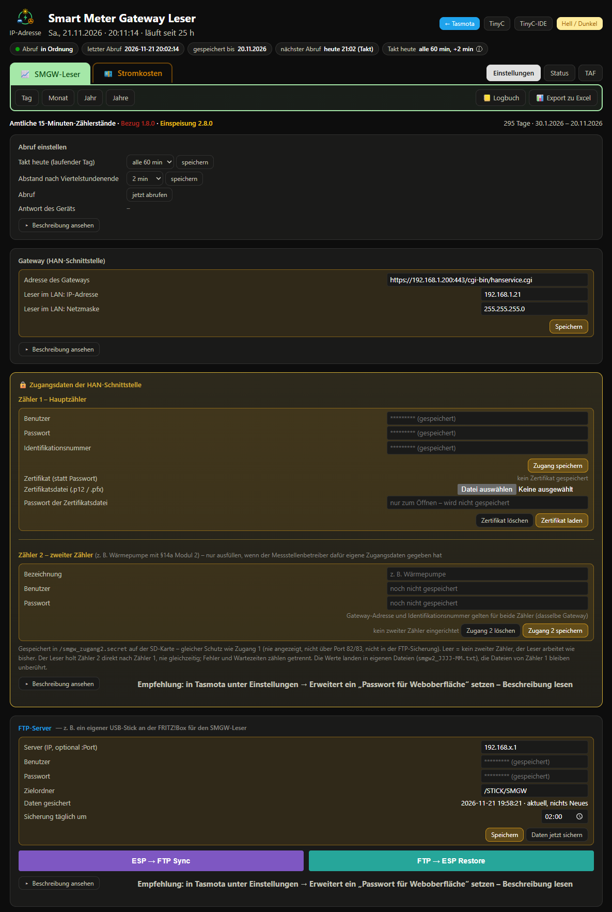
| Feld | Bedeutung |
|---|---|
| Takt heute | aus / 15 / 30 / 60 min / 2 h: holt zusätzlich die Viertelstunden des laufenden Tages nach der Uhr. Jeder Takt ist eine eigene Anmeldung am Gateway. |
| Abstand nach Viertelstundenende | 0–10 min (Konsole 0–14), Vorgabe 2: Zeit für das Gateway, die gerade beendete Viertelstunde abzulegen. |
| jetzt abrufen | holt sofort alle fehlenden Tage (und bei Takt den laufenden). Eine laufende Wartezeit nach einem Fehler bleibt bestehen, der Abruf ist dann vorgemerkt. Unter „Antwort des Geräts“ steht während des Abrufs „Abruf läuft …“, danach das Ergebnis, z. B. „fertig 10:35:35, in Ordnung – neue Viertelstunden bis 10:30“ oder „… keine neuen Werte“ (eine Viertelstunde ist erst nach ihrem Ende abrufbar), bei einem Fehler dessen Text. |
| Feld / Knopf | Bedeutung |
|---|---|
| Server | IP-Adresse des FTP-Servers, optional mit :Port. Bei der FRITZ!Box die IP angeben, nicht fritz.box (über IPv6 verweigert die Box den passiven Modus). |
| Benutzer, Passwort | FTP-Benutzer mit Schreibrecht. Leer lassen = gespeicherter Wert bleibt. Die Seite bekommt beide nie zurück. |
| Zielordner | Ordner aus Sicht dieses Benutzers, z. B. /STICK/SMGW; leer = oberste Ebene. Er muss vorhanden sein – das Skript legt ihn nicht an, sondern meldet einen Fehler. |
| Sicherung täglich um | Vorgabe 02:00 (Tagesabruf 00:20). Jedem Gerät am selben FTP-Server eine eigene Uhrzeit geben (z. B. HEMS 01:00, SMGW-Leser 02:00). |
| Speichern | schreibt /smgw_ftp.secret und die Uhrzeit. Neues Ziel → beim nächsten Lauf geht alles neu hoch. |
| Daten jetzt sichern | smgw_tage.txt und die Monatsdateien, nur geänderte, jeweils ganz; dazu smgw_cfg.txt |
| ESP → FTP Sync | alle Daten noch einmal, die Einstellungen und die Seite (smgw.html + .gz) |
| FTP → ESP Restore | holt Daten und Einstellungen zurück, aber nur Dateien, die auf der SD fehlen oder kürzer sind als auf dem Server (z. B. nach einem Kartentausch). |
Am besten in der FRITZ!Box einen eigenen Benutzer nur mit NAS-Recht anlegen. Auf dem Server liegen danach normale Textdateien. Fehler (Server nicht erreichbar, Anmeldung abgelehnt, Zielordner fehlt) stehen im Kasten, im Reiter Status und auf der Tasmota-Hauptseite; neuer Versuch nach 1 Stunde.
Der Knopf „📊 Export zu Excel“ rechts in der Reiterzeile von /smgw öffnet die Kachel Excel / Power Query. Sie enthält eine fertige Abfrage über alle Monatsdateien und den laufenden Tag. Die Adresse setzt die Seite selbst ein – so, wie sie im Browser aufgerufen wurde (IP oder Name). Abfrage kopieren, dann in Excel:
smgw_JJJJ-MM.txt, smgw_heute.txt) über dessen Port 82, nur lesend, im Heimnetz (WLAN). Mit dem Smart-Meter-Gateway spricht nur der Leser selbst, über sein LAN-Kabel an der HAN-Buchse. Deshalb:
Die Abfrage, wie sie die Kachel ausgibt (IP-DES-LESERS setzt die Seite selbst ein; Start = Monat des ersten gespeicherten Tages):
let
Basis = "http://IP-DES-LESERS:82/ufs/",
Start = #date(2026, 1, 1),
Heute = Date.From(DateTime.LocalNow()),
Monate = List.Generate(() => Start, each _ <= Heute, each Date.AddMonths(_, 1)),
Namen = List.Transform(Monate, each "smgw_" & Date.ToText(_, "yyyy-MM", "en-US") & ".txt")
& {"smgw_heute.txt"},
Hole = (n as text) => try Csv.Document(Web.Contents(Basis & n),
[Delimiter = "#(tab)", Columns = 3, Encoding = 65001]) otherwise null,
Liste = List.RemoveNulls(List.Transform(Namen, Hole)),
Alle = if List.IsEmpty(Liste) then #table({"Column1", "Column2", "Column3"}, {}) else Table.Combine(Liste),
Spalten = Table.RenameColumns(Alle, {{"Column1", "Zeit"}, {"Column2", "Bezug_1.8.0"}, {"Column3", "Einsp_2.8.0"}}),
Ohne_Doppelte = Table.Distinct(Spalten, {"Zeit"}),
Typen = Table.TransformColumnTypes(Ohne_Doppelte, {{"Zeit", type datetime},
{"Bezug_1.8.0", type number}, {"Einsp_2.8.0", type number}}, "en-US")
in
Typen
Was sie tut: für jeden Monat vom Start bis heute die Monatsdatei holen (fehlende Monate werden übersprungen), dazu die Datei des laufenden Tages; alles zu einer Tabelle zusammenfügen, doppelte Viertelstunden entfernen, Zeit als Datum/Uhrzeit und die Zählerstände als Zahl (Punkt als Dezimalzeichen in der Datei, deshalb „en-US“). Excel zeigt sie dann im deutschen Format.
Spalten: Zeit, Bezug_1.8.0, Einsp_2.8.0 (kWh, Zählerstände; Verbrauch einer Viertelstunde = Differenz zweier Zeilen). Ändert sich die Adresse des Lesers, die Seite unter der neuen Adresse öffnen und neu kopieren – oder nur die Zeile Basis ändern.
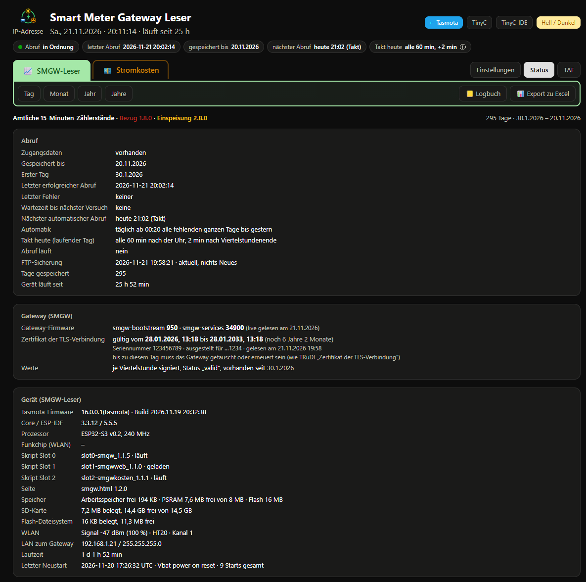
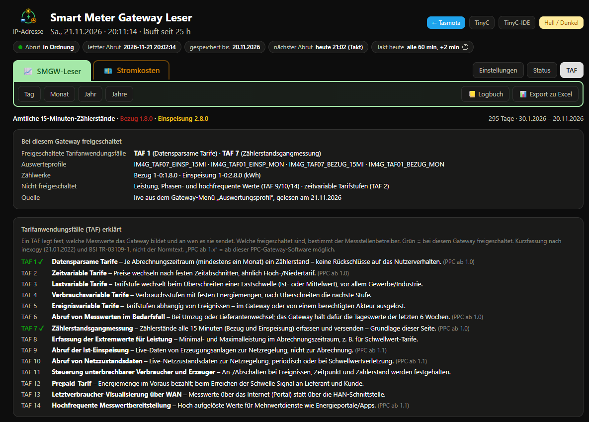
| Befehl | Bedeutung |
|---|---|
SMGW | Zustand (Zugang, gespeichert bis, letzter Abruf, Fehler) |
SMGWAbruf | Abruf jetzt vormerken (eine laufende Wartezeit nach einem Fehler bleibt bestehen) |
SMGWTakt <min> | laufenden Tag alle <min> Minuten nach der Uhr holen (mindestens 15, 0 = aus) |
SMGWVersatz <min> | Abstand nach dem Viertelstundenende (0–14, Vorgabe 2) |
SMGWHost <IP> · SMGWPort <n> · SMGWPfad </…> | Adresse der HAN-Schnittstelle (Vorgabe 192.168.1.200 · 443 · /cgi-bin/hanservice.cgi) |
SMGWFtp · SMGWFtp SYNC · SMGWFtp RESTORE | FTP: Daten jetzt sichern · alles senden · zurückholen. Schreibweise egal (sync = SYNC). |
SMGWFtpZeit HH:MM | Uhrzeit der täglichen Sicherung |
SMGWTestTag JJJJ-MM-TT | genau diesen Tag einmal abfragen (eigene Sitzung, auch vor dem ersten Messwert) und das Ergebnis ins Log schreiben: Ergebnis, HTTP, Länge, Werte, Viertelstunden, Token, Fehlermeldungen; Rohantwort in /smgw_testtag.secret (ab 1.1.4; nur angemeldet lesbar). Speichert nichts, ändert keine Wartezeit. Nur, wenn kein Abruf und keine Wartezeit läuft. |
SMGWLogbuch | (ab 1.1.5) Logbuch des Gateways herunterladen, wie der Knopf im Reiter Logbuch: Tag für Tag ab dem letzten Stand (beim ersten Mal ab dem ersten Tag mit Messwerten), heute immer neu. Eigene Sitzung; nur, wenn kein Abruf und keine Wartezeit läuft (9.6). |
SMGWLogbuch neu | Logbuch ganz neu herunterladen (löscht den bisherigen Stand) |
SMGWLogbuch action=…&… | nur zum Erkunden: eine Abfrage mit „log“ im Aktionsnamen (z. B. action=log&from=2026-11-20&to=2026-11-20), Rohantwort in /smgw_lbroh.secret, ins Log nur Feldnamen und Zeilenzahl. Andere Menüs des Gateways (Selbsttest usw.) und logout nimmt der Befehl nicht an. |
SMGWFrei | Wartezeit nach einem Fehler aufheben (nur bewusst benutzen, Sperre!) |
TinyCTlsCert | Zustand des Client-Zertifikats (loaded, Kurve); setzt Slot 0 selbst |
Zugangsdaten gibt es absichtlich nicht als Konsolenbefehl.
Jedes Gateway schickt beim Verbindungsaufbau sein TLS-Zertifikat mit (Norm X.509). Darin steht, wie lange es gilt – beim PPC-Gateway des Verfassers sieben Jahre ab der Aktivierung (beobachtet). Bis zu diesem Tag muss das Gateway getauscht oder erneuert sein. Die Anzeigesoftware TRuDI der PTB zeigt dasselbe unter „Details zum Smart Meter Gateway“ → „Zertifikat der TLS-Verbindung“.
TinyCTlsGueltig gibt sie aus (Zeiten in UTC; „ausgestellt für“ nur mit den letzten 4 Stellen, der Rest als *, damit die Kennung nie im Log steht). Er zeigt immer die letzte TLS-Verbindung des Geräts – läuft Slot 2, ist das kurz nach dem Gateway-Abruf meist der Börsenabruf (api.energy-charts.info). Maßgeblich für das Gateway ist darum der Reiter Status bzw. /smgw_gateway.json, die Slot 0 direkt nach seiner eigenen Verbindung schreibt./smgw_gateway.json. Mit älterer Firmware steht nur eine Logzeile da, sonst läuft alles wie vorher.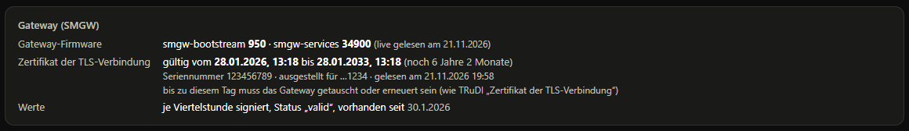
Das Gateway führt für den Anschlussnutzer ein Letztverbraucher-Logbuch (Menü „Logs“ der HAN-Schnittstelle): Neustarts, Selbsttests, Uhrzeit-Synchronisation, Anmeldungen, Tarifberechnung und Fehler, je mit Zeit, Stufe (INFO, ERROR …), Nummer, Nachricht und Status („erfolgreich“/„fehlgeschlagen“). Ab Slot 0 1.1.5 holt der Leser es auf Wunsch ab.
/smgw, Reiter Logbuch, Knopf „Logbuch herunterladen“ (oder Konsole SMGWLogbuch). Nur auf Knopfdruck – beim täglichen Abruf fragt der Leser das Logbuch nicht ab. Er meldet sich wie beim Abruf einmal an und fragt das Logbuch Tag für Tag ab, weil das Gateway je Abfrage höchstens 100 Einträge liefert („Seite 1“). Beim ersten Mal beginnt er am ersten Tag mit Messwerten (beim Verfasser 291 Tage in rund 7 Minuten, beobachtet 21.11.2026), danach nur ab dem letzten Stand; der heutige Tag wird jedes Mal neu geholt. Der Knopf braucht die Anmeldung am Leser (Webpasswort); ohne Anmeldung sagt die Seite das./smgw_logbuch.txt und /smgw_logbuch_heute.txt (8). Die stündlichen Anmeldungen des Lesers selbst (Nummer 10228) lässt er weg, sie wären nur Ballast.***). Datum und Uhrzeit bleiben. Die Rohantwort liegt nur während des Herunterladens als .secret auf der Karte und wird danach gelöscht./smgw_fw_verlauf.txt: Beim täglichen Lesen der Firmware schreibt er eine Zeile „Datum · smgw-bootstream · smgw-services“, sobald sich die Version ändert. Die Seite nimmt als „vorher“ den letzten Eintrag vor dem Update-Tag, als „danach“ den ersten ab dem Update-Tag (ohne Eintrag beim jüngsten Update die heutige Version). Ältere Stände, die man kennt (z. B. aus TRuDI), lassen sich als Startwerte von Hand eintragen: Textdatei mit je einer Zeile JJJJ-MM-TT<Tab>bootstream<Tab>services, aufsteigend nach Datum, als /smgw_fw_verlauf.txt auf die SD-Karte. Darunter steht die aktuelle Version laut Gateway (wie im Reiter Status).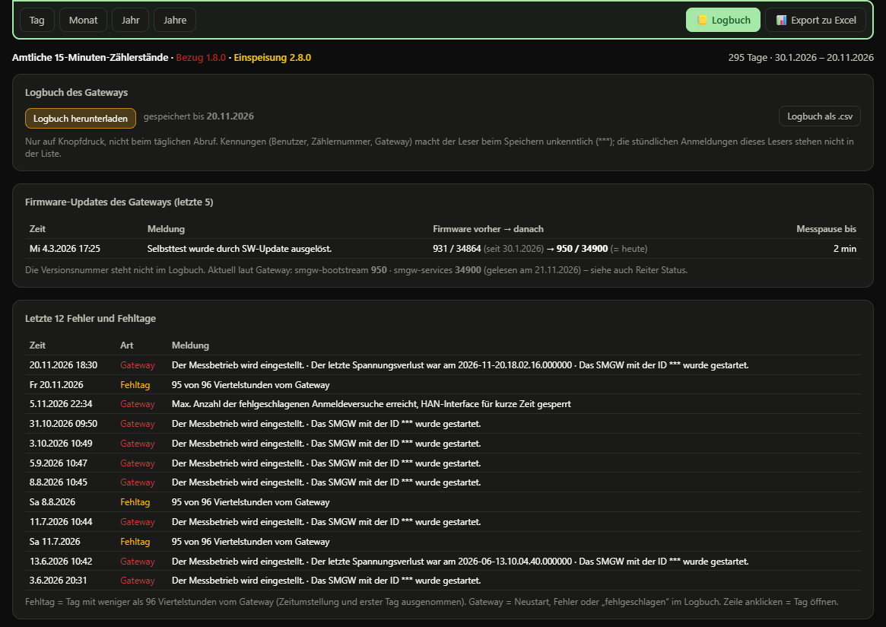
Beobachtet beim PPC-Gateway des Verfassers (Logbuch 30.01.–21.11.2026, 13 Neustarts): Das Gateway macht alle 28 Tage einen Selbsttest mit Neustart, jedes Mal etwa 1½ Minuten später am Tag (08.04. 20:27, 06.05. 20:29, 03.06. 20:31; ab 11.07. samstags 10:44, 10:45, 10:47, 10:49, 31.10. 09:50 Winterzeit). Der Ablauf ist immer gleich, rund zwei Minuten:
10063 Selbsttest wurde durch SMGW ausgelöst 10009 Protokolldienst ... ordnungsgemäß beendet 10008 Protokolldienst ... gestartet 10173 Das SMGW ... wurde gestartet 10020 Ein neuer Zähler ... wurde hinzugefügt 10260 ERROR Der Messbetrieb wird eingestellt (= Messpause, gehört dazu) 10064 Selbsttest wurde ohne Fehler abgeschlossen 10073 Die Uhrzeit wurde durch Neusynchronisation wiederhergestellt 10261 Der Messbetrieb wird wieder aufgenommen
Fällt die Messpause genau auf ein Viertelstundenende, fehlt dieser eine Zählerstand (16.02. 17:00, 11.07. und 08.08. je 10:45); einige Minuten danach fehlt nichts. Andere Auslöser stehen in derselben Zeile: „durch SW-Update“ (Firmware-Update, 04.03.) oder „durch <Benutzer>“ (von Hand über die HAN-Seite angestoßen). Ohne Selbsttest (13.06. 10:04–10:42 und 20.11. 18:02–18:30) war das Gateway fast eine halbe Stunde aus und meldete danach „Der letzte Spannungsverlust war am …“ – nur in diesen Fällen und beim Firmware-Update steht diese Meldung, nicht bei den Selbsttests. Das Haus war dabei nicht stromlos; wer den Neustart ausgelöst hat, steht nicht im Letztverbraucher-Logbuch, das weiß nur der Messstellenbetreiber.
LAN-Kabel, LAN-Adresse (Status 5) und die Gateway-Adresse (Einstellungen) prüfen. Der Leser muss im selben Netz wie die HAN-Buchse sein. Der nächste Versuch kommt automatisch nach der Wartezeit.
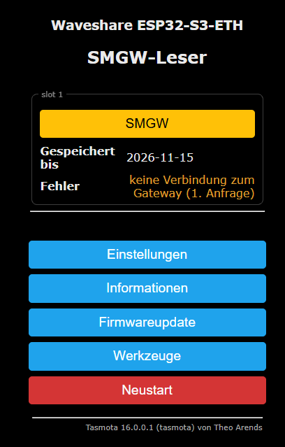
Woran es genau lag, zeigt im Log die Zeile SMG: Diagnose <Schritt>: Stufe …: Stufe 1 = Verbindungsaufbau gescheitert (tlsConnect), 2 = Senden gescheitert, 3 = keine Antwortzeile, 4 = Antwort unvollständig. Dazu neu (Verbindung neu aufgebaut oder weiterverwendet), stand (Verbindung bestand noch), vorher close (die vorige Antwort hatte „Connection: close“), Status, angekündigte Länge und gelesene Bytes. Die Zeile enthält keine Zugangsdaten.
Typischer Fall: Stufe 3, neu 0, stand 1, vorher close 0 – das Gateway hat eine weiterverwendete Verbindung still geschlossen. Der Leser holt den Tag dann mit neuer Verbindung („Tag … erneut mit neuer Verbindung“), bei einer weiterverwendeten Verbindung einmal auch die Anmeldung („Anmeldung erneut mit neuer Verbindung“ – nur, wenn mit den aktuellen Zugangsdaten, der Gateway-Adresse und dem Zertifikat seit dem Start schon eine Anmeldung gelungen ist; so bringt ein falsches Passwort keinen zweiten Fehlversuch). Beim Erstabruf am 09.11. kam das bei 283 Tagen viermal vor, alle Tage wurden geholt (beobachtet). Bricht es später ab, heißt der Fehler „Zaehlerseite: keine Antwort“ bzw. „Tag JJJJ-MM-TT: keine/abgebrochene Antwort“.
Benutzername oder Passwort stimmen nicht. Auf der Seite neu eintragen; neue Daten heben die 12-h-Wartezeit auf. Nicht mehrfach hintereinander probieren, sonst sperrt das Gateway.
Die Firmware enthält setRSAOnly(false) nicht (Abschnitt 4.1). Das Gateway bietet nur ECDSA an.
Die Firmware ist älter als 08.11.2026 oder ohne USE_MQTT_CLIENT_CERT gebaut (Abschnitt 4.3). Der Abruf läuft dann mit Benutzer/Passwort weiter. Ab Firmware 09.11.2026 antwortet TinyCTlsCert in diesem Fall selbst mit "error":"needs USE_MQTT_CLIENT_CERT".
Die Seite lädt die Diagramm-Bibliothek Chart.js von cdnjs und prüft sie per Prüfsumme; der Browser braucht dafür Internet. Ohne Internet oder bei falscher Prüfsumme fehlen nur die Diagramme, alle Werte stehen weiter in den Tabellen.
Nur P4: Der C6 hat noch die Werksfirmware. HostedOta ausführen (Abschnitt 4.4).
Der Ordner existiert für diesen Benutzer nicht. Bei einem Benutzer, dessen Freigabe nur auf einen Ordner zeigt, ist dieser Ordner schon „/“ – Zielordner dann leer lassen.
Die Adresse in der Zeile Basis stimmt nicht mehr (neue IP des Lesers – die Adresse des Gateways spielt für Excel keine Rolle). Seite unter der aktuellen Adresse öffnen und die Abfrage neu kopieren.
Das Gateway hat sie selbst nicht. Der Leser holt jeden Tag nach Mitternacht als Ganzes beim Gateway ab und speichert genau das, was kommt; ein Neustart oder Ausfall des Lesers lässt darum keine Viertelstunde aus. Prüfen lässt sich ein Tag mit SMGWTestTag JJJJ-MM-TT („Viertelstunden 95“ = das Gateway hat selbst nur 95).
Neustart des Gateways: Startet das Gateway genau zu einem Viertelstundenende neu, fehlt dieser eine Zählerstand – im Diagramm sieht man dann eine halbe Stunde ohne Balken, weil eine Viertelstunde Anfang und Ende braucht. Der Verbrauch geht nicht verloren, er steckt im nächsten Stand. Ob es ein Neustart war, zeigt der Reiter Logbuch (9.6): Fehltag und „Gateway … gestartet“ stehen dann am selben Tag.
Zeitumstellung (geprüft am 13.11.2026 mit SMGWTestTag am PPC-Gateway): Im März (Uhr vor) liefert das Gateway 92 Viertelstunden, 01:45 folgt direkt 03:00 – das ist richtig, dazwischen liegen echte 15 Minuten. Im Oktober (Uhr zurück) liefert es 100 Werte, die Stunde 02:00–02:45 zweimal. Gespeichert wird je Uhrzeit nur ein Wert, und zwar der erste; die gespeicherte Viertelstunde 02:45 umfasst darum 75 Minuten (zweite 02-Uhr-Stunde plus 02:45–03:00). Die Tagessumme stimmt; die Seite rechnet die Leistung dort über 75 Minuten und schreibt „75 min, Zeitumstellung“ dazu, die Bestenlisten lassen diese Stunde aus.
/smgw, CSV, Excel und FTP-Sicherung laufen genauso. Slot 0 und Slot 1 werden für die Kostenrechnung nicht geändert.Mit Slot 2 rechnet die Seite /smgwkosten aus den amtlichen 15-Minuten-Zählerständen des Lesers, was Strombezug und Einspeisung gekostet bzw. gebracht haben – je Viertelstunde, Tag, Monat und Abrechnungsjahr, mit den eigenen Preisen. Sie vergleicht den eigenen Tarif außerdem mit Angeboten anderer Anbieter, immer auf dem tatsächlich gemessenen Verbrauch.
smgw_kosten.html.gz auf die SD-Karte laden, genauso wie smgw.html.gz (Abschnitt 5.2).slot2-smgwkosten_1.1.1.tc öffnen, Slot 2 wählen, hochladen, in /tc Autostart einschalten (wie Abschnitt 5.3).SMG-Kosten: 1.1.1 bereit, Boerse bis …, Messung ab …, nach dem nächsten Börsenabruf SMG-Boerse: … gespeichert (… Werte). Steht stattdessen SMG-Boerse: Antwort JJJJ-MM-01 ohne Zeitstempel (… Byte) im Log, ist die Firmware älter als TinyC 1.6.78 (Abschnitt 4.1). Andere Gründe für eine fehlende Zeile (kein Internet, Uhrzeit noch nicht gestellt, HTTP-Fehler) zeigt http://<Gerät>/smgwb?n=status im Feld fehler./smgw neu laden: In der Reiterzeile steht jetzt mittig die Seitenwahl „SMGW-Leser | Stromkosten“. SMGW-Leser ist immer grün, Stromkosten immer orange; die offene Seite ist kräftig, die andere blass. Auch der gewählte Reiter hat die Farbe seiner Seite. Ohne Slot 2 bleibt sie verborgen.Slot 2 braucht Internet über das WLAN (für die Börsenpreise). Beim ersten Start holt er die Börsenpreise ab dem 01.01. des ersten Messjahres nach (höchstens sechs Jahre zurück; vor dem ersten Messwert ab dem 01.01. des Vorjahres; Jahre vor dem Gateway siehe 11.7), einen Monat alle 20 Sekunden – ein ganzes Jahr dauert etwa 4 Minuten. Solange Slot 0 am Gateway abruft, wartet Slot 2.
Wieder weglassen: In /tc Slot 2 stoppen und Autostart ausschalten. Die Seitenwahl verschwindet beim nächsten Laden von /smgw. Die Dateien der Kostenrechnung aus Abschnitt 8 (/smgw_boerse_*.txt, /smgw_tarif.json) können liegen bleiben oder gelöscht werden; die Messwerte berührt das nicht.
webOn). Das geht in einem Slot ungleich 0 ab TinyC 1.6.77 (03.11.2026); mit der Firmware aus Abschnitt 4.1 ist das erfüllt.http://<Gerät>/smgwb?n=status zeigt, bis wann Börsenpreise da sind, den letzten erfolgreichen Abruf und einen eventuellen Fehler.Die Börsenpreise braucht nur, wer einen dynamischen Tarif hat oder vergleichen will. Für Festpreis und zeitvariable Tarife rechnet die Seite ohne sie.
Netzentgelte, Abgaben und meist auch der Lieferantenpreis wechseln zum 01.01. Darum gibt es für jedes Jahr ein Tarifblatt mit allem, was in diesem Jahr gilt. Oben stehen Knöpfe je Jahr (höchstens acht: bis zu sechs Jahre zurück, das laufende Jahr und das Folgejahr – jedes Jahr mit Messwerten oder mit Tarifblatt), beschriftet mit „abgerechnet“, „Vorjahr · abgerechnet“, „laufendes Jahr“ oder „Folgejahr · vorläufig“.
/smgw_tarif.bak (zurückgelesen und verglichen), schreibt dann alles in /smgw_tarif.json über Port 83, liest die Datei über Port 82 zurück und vergleicht sie. Konnte die Seite ein vorhandenes Tarifblatt beim Laden nicht lesen, zeigt sie das rot an und sperrt Speichern – sonst würde es mit Beispielwerten überschrieben. Dann die Seite neu laden; zur Not die vorige Fassung aus /smgw_tarif.bak zurückkopieren. Ungespeicherte Änderungen zeigt „● nicht gespeichert“; beim Verlassen der Seite warnt der Browser. Der Status steht in einer eigenen Zeile unter den Knöpfen; „gespeichert … (zurückgelesen, gleich)“ verschwindet nach 15 Sekunden, Warnungen bleiben stehen.Ein Tarifblatt hat drei Teile:
Im Teil 1 Lieferant stehen drei Zeilen für die Abrechnung des Lieferanten – in jedem Tarifblatt, weil sich der Abschlag meist jedes Jahr ändert:
Ändert der Lieferant den Abschlag mitten im Jahr: unten „Änderung mitten im Jahr“ einen Stand ab diesem Tag anlegen und dort nur den neuen Abschlag eintragen; er gilt ab dem ersten vollen Monat. Beginn und Anzahl stehen nur im Stand ab 01.01. Beim Speichern schreibt die Seite die angezeigten Werte fest in jedes Tarifblatt. Tarifdateien aus 1.1.x mit einem gemeinsamen Abschlag für alle Jahre rechnen weiter, bis im Tarifblatt etwas eingetragen ist.
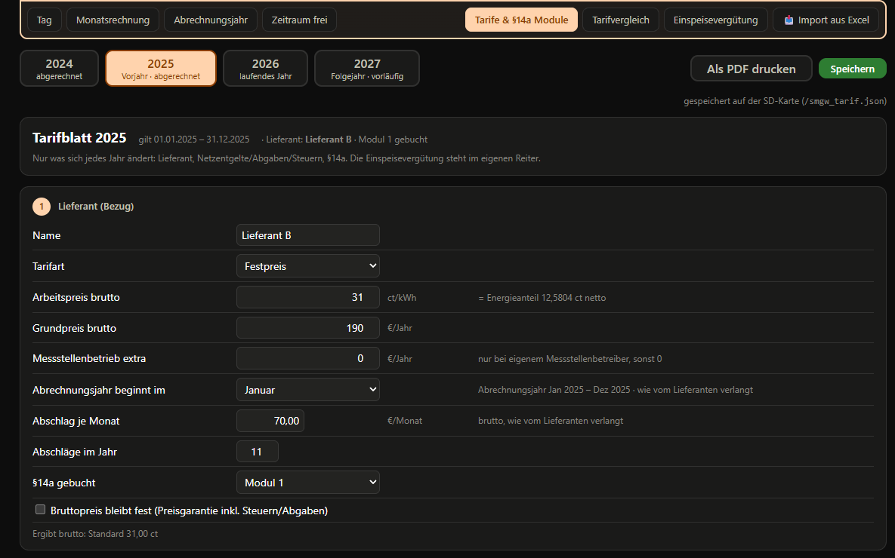
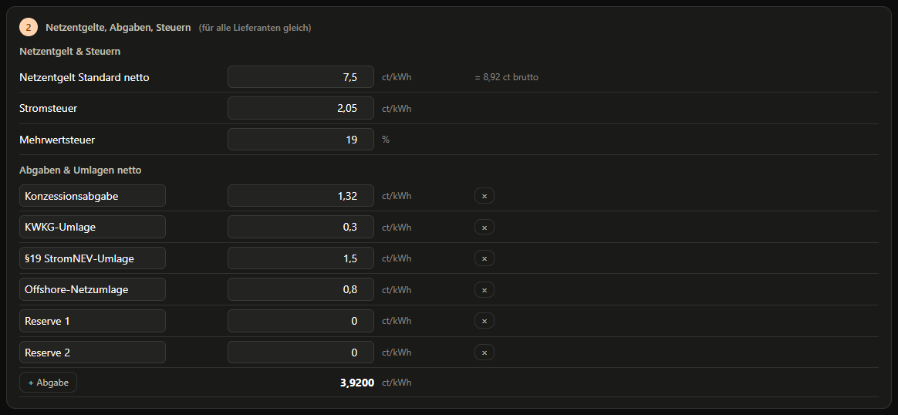
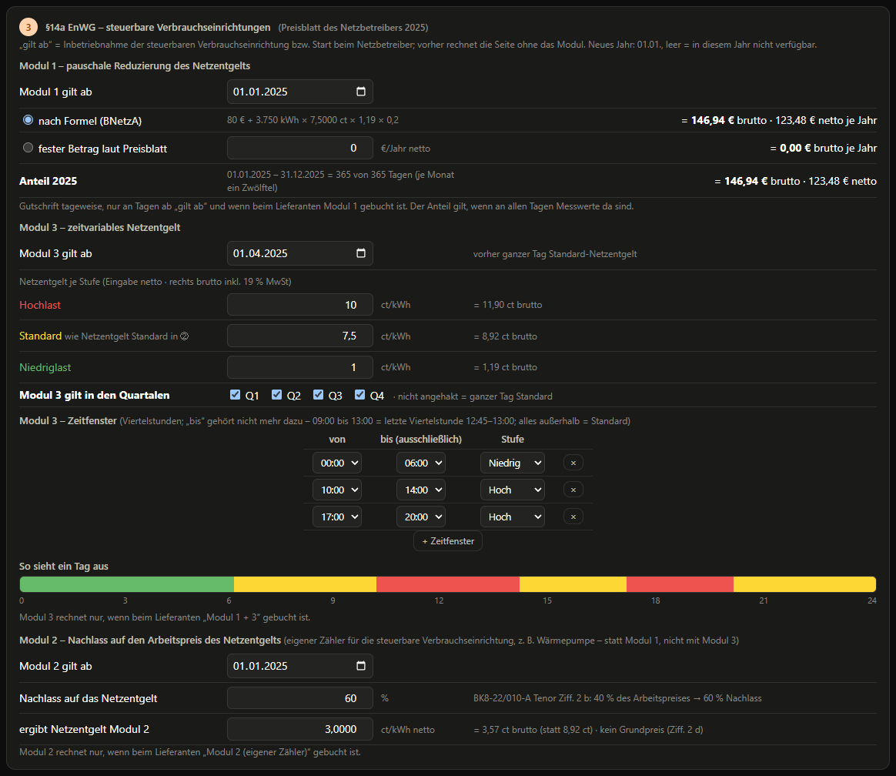
Für das Folgejahr (z. B. 2027) lassen sich Varianten des Tarifblatts anlegen – zum Durchrechnen, was eine Änderung bringt oder kostet, etwa eine niedrigere Stromsteuer oder neue Netzentgelte. Die Varianten sind nur für den Tarifvergleich (11.5); Tag, Monatsrechnung und Abrechnungsjahr rechnen immer mit dem Grundblatt.
/smgw_tarif.json unter var).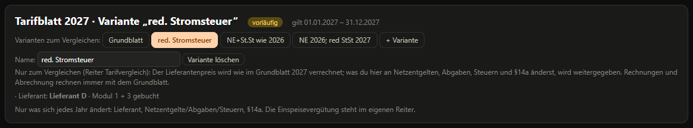
Einspeisevergütung hat einen eigenen Reiter oben: Vergütung, Art, Inbetriebnahme, Ende der Förderung. Sie kommt vom Verteilnetzbetreiber und bleibt meist 20 Jahre gleich; ändert sich die Anlage, dort einen neuen Abschnitt anlegen.
Ältere Daten: Gespeicherte Zeitfenster der Form „05:59“ (alte Fassungen) werden beim Laden einmal zu „06:00“; die Rechnung ändert sich dadurch nicht.
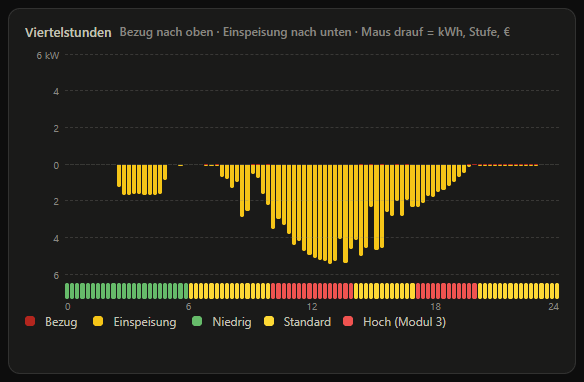
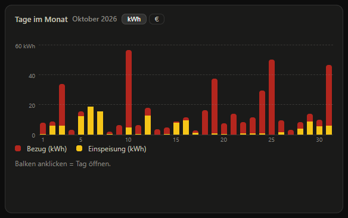
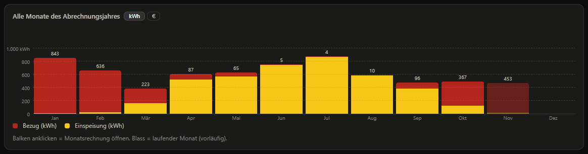
Saldo (Tag, Monat, Abrechnungsjahr): ein Streifen mit Balken an einer gemeinsamen Nulllinie und der Rechnung
Grundgebühr (Grundpreis + Messstellenbetrieb) + Strom (Arbeitspreis) − §14a-Pauschale (Modul 1) − Einspeisevergütung = Saldo
Die Grundgebühr steht damit getrennt vom Strom: Man sieht, was der Strom selbst, was die Grundgebühr und was die Einspeisung ausmacht. Darunter: „Grundgebühr und Strom brutto, inkl. 19 % MwSt (darin … €)“. Alle Beträge sind auf Cent gerundet, bevor sie zusammengezählt werden – die Gleichung geht so immer auf den Cent auf. Der Gesamtbetrag heißt in den Kacheln, der Rechnungstabelle und beim Abschlag „Kosten gesamt“, in der Monatstabelle und in den Balken kurz „Kosten“.
Netzentgelt (Tag, Monat, Abrechnungsjahr, Zeitraum frei): unter dem Saldo-Balken steht immer „Im Arbeitspreis enthalten: Netzentgelt (brutto)“ – es ist ein Teil des Arbeitspreises, kein eigener Rechenschritt im Saldo.
So sieht man ohne Rechnen, was Modul 3 mit dem eigenen, unveränderten Verbrauch bringt oder kostet. Die Zahlen beruhen auf den Zählerständen des Gateways und den Netzentgelten aus dem eigenen Tarifblatt; „gespart“ im Abrechnungsjahr ist derselbe Betrag wie „Modul 3“ in der Kachel „§14a EnWG – berechneter Vorteil“.
§14a EnWG – berechneter Vorteil (Abrechnungsjahr): Modul 1 = die Pauschale anteilig ab „Modul 1 gilt ab“; Modul 3 = Kosten mit Modul 1 minus Kosten mit Modul 1 + 3, mit den eigenen Viertelstunden und den Stufen, Zeitfenstern und Quartalen aus dem Tarifblatt, ab „Modul 3 gilt ab“. Gerechnet wird der Anspruch nach den Preisblättern – unabhängig davon, was beim Lieferanten gebucht oder tatsächlich gutgeschrieben wurde. Ist ein Modul nicht verfügbar, steht das dort. Die Kachel kommt mit ins PDF; so gibt es je Jahr einen Ausdruck zum Nachweis.
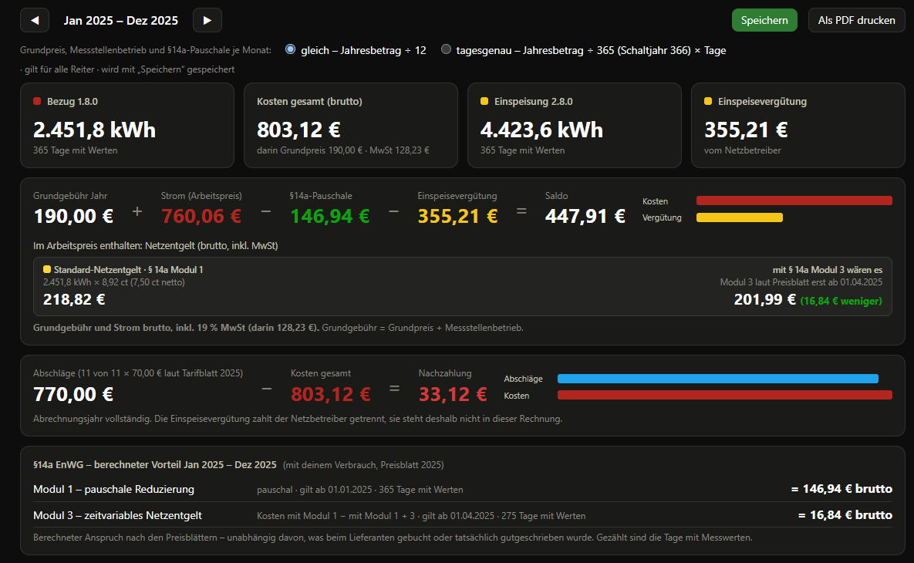
Als PDF drucken (Monatsrechnung, Abrechnungsjahr, Tarifvergleich): öffnet den Druckdialog, dort „Als PDF speichern“. In A4-Breite, hell, mit eigener Kopfzeile; das Abrechnungsjahr auf zwei Seiten (Seite 2 ab der Tabelle „Netzentgelt nach § 14a Modul 3 je Monat“), das Tarifblatt auf einer Seite; (Ansicht, Zeitraum, Druckdatum, Herkunft der Daten – ohne Adresse des Lesers), ohne Knöpfe.
Laden: Die Seite holt zuerst das laufende Jahr und ist dann bedienbar; ältere Monate und Börsenpreise kommen im Hintergrund nach („Bedienbar – lade im Hintergrund …“), danach rechnet sie neu. Abgeschlossene Monate merkt sich der Browser (IndexedDB) und prüft sie höchstens einmal am Tag nach – ab dem zweiten Aufruf ist die Seite nach wenigen Sekunden komplett (beobachtet). Die Daten bleiben auf der SD-Karte; der Browser hat nur eine Kopie.
Der Tarifvergleich rechnet einen Verbrauch mit mehreren Tarifen durch. Oben:
Der Reiter „Tarifvergleich“ steht direkt hinter „Tarife & §14a Module“. Die Zeilen stehen in fester Reihenfolge: angehakte Vorjahre (blass) → aktuelles Jahr → Vorausplanung (sobald es ein Tarifblatt für das Folgejahr gibt) → die Varianten des Folgejahres (ab 1.2.0) → die angehakten Angebote (Festpreis 1/2/3, Zeitvariabel 1/2/3, Dynamisch 1/2/3).
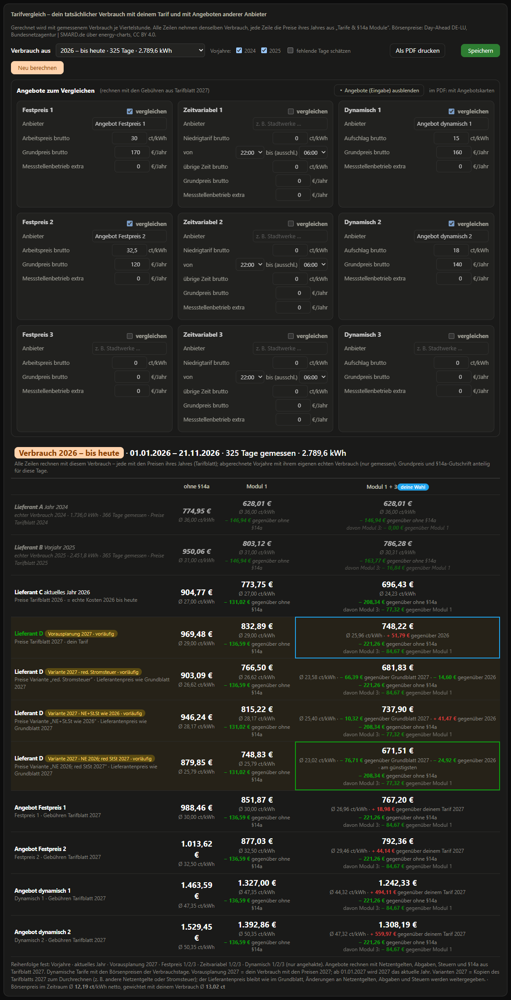
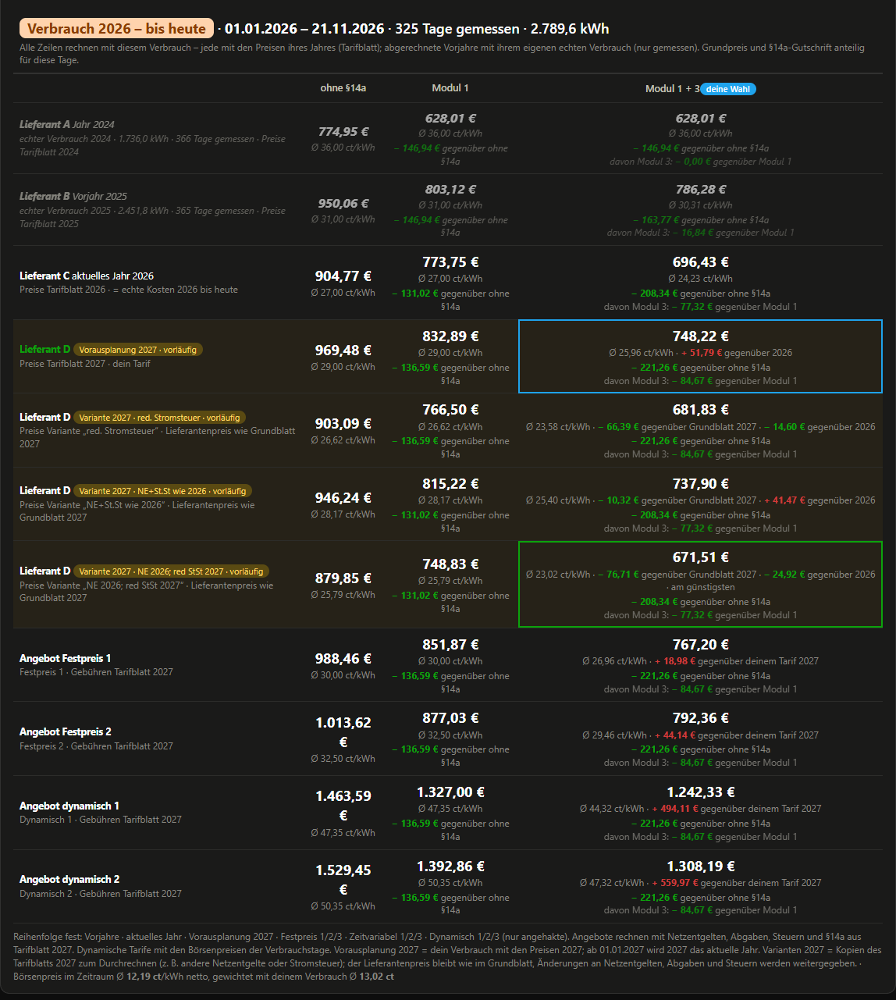
Wurde das Gateway mitten im Jahr eingebaut, fehlen am Jahresanfang Tage. Wer dafür eigene Zählerstände hat (z. B. von einem optischen Lesekopf oder abgelesen), kann sie als /smgw_ergaenzung.txt auf die SD-Karte legen:
JJJJ-MM-TT hh:mm<TAB>Bezug kWh<TAB>Einspeisung kWh
Die Seite liest die Zählerstände monatsweise von der SD-Karte. Für jeden Monat, für den eine Datei da ist, rechnet sie – egal, ob die Werte vom Gateway stammen oder selbst abgelegt sind. Wer für die Zeit vor dem Gateway eigene 15-Minuten-Werte hat, kann damit das Vorjahr (und später weitere Jahre) vollständig machen.
Wer die Werte in Excel hat: Abschnitt 11.8 zeigt den Weg mit einer Musterdatei.
Woher die Werte kommen können: von einem optischen Lesekopf am selben Hauptzähler des Netzbetreibers (z. B. Tasmota mit SML-Skript, Logdatei oder Excel-Tabelle). Der Lesekopf liest dieselben Zählerstände wie das Gateway; die Werte sind deshalb genauso ablese-relevant. Werte von einem eigenen Zwischenzähler hinter dem Hauptzähler sind nicht dasselbe – die gehören nicht hierher.
Datei je Monat: /smgw_JJJJ-MM.txt (z. B. /smgw_2025-01.txt), eine Zeile je Viertelstunde:
JJJJ-MM-TT hh:mm<TAB>Bezug kWh<TAB>Einspeisung kWh 2025-01-01 00:00 1234.5600 5678.9000 2025-01-01 00:15 1234.8100 5678.9000
/smgw_JJJJ-MM.txt gibt. Der Monat, in dem das Gateway begann (z. B. März, Gateway ab 15.03.), gehört dem Gateway – die Tage davor kommen in die Ergänzung (Abschnitt 11.6). Vor dem Hochladen über http://<Gerät>:82/ufs/sdfs/smgw_JJJJ-MM.txt nachsehen, ob die Datei schon da ist.Hochladen (wie die Seite, Abschnitt 5.2) – je Datei:
curl --data-binary @smgw_2025-01.txt http://<Gerät>:83/ufs/sdfs/smgw_2025-01.txt curl http://<Gerät>:82/ufs/sdfs/smgw_2025-01.txt | head -3
Oder die SD-Karte im Kartenleser beschreiben (Slots vorher stoppen). Danach die Seite Stromkosten neu laden (F5). Sie liest ab dem ersten Tarifblatt – für ein Jahr vor dem Vorjahr zuerst unter „Tarife & §14a Module“ dessen Tarifblatt anlegen. War die Seite heute schon offen, merkt sich der Browser einen bis dahin leeren Monat bis morgen; sofort sichtbar wird die neue Datei nach dem Löschen der Websitedaten des Lesers im Browser.
Börsenpreise für so ein Jahr braucht nur, wer in diesem Jahr einen dynamischen Tarif hatte. Slot 2 holt sie ab dem ersten Messjahr des Gateways (höchstens sechs Jahre zurück); für ein früheres Jahr die Dateien /smgw_boerse_JJJJ-MM.txt im Format von Abschnitt 8 selbst ablegen, z. B. aus https://api.energy-charts.info/price?bzn=DE-LU&start=2025-01-01T00:00%2B01:00&end=2026-01-01T00:00%2B01:00 (Zeitstempel in Unix-Sekunden UTC → Ortszeit umrechnen). Bis 30.09.2025 gibt es nur Stundenpreise: den Wert dann für alle vier Viertelstunden der Stunde eintragen.
Aufbewahrung: Die Zählerdateien löscht kein Slot – sie bleiben auf der SD-Karte, auch nach einem Tausch des Gateways. Börsendateien behält Slot 2 sieben Kalenderjahre. Die Seite lädt die Zählerstände ab dem ersten Tarifblatt (höchstens sieben Jahre).
/smgw_eigen_JJJJ.txt. Wo das Gateway Werte hat, gelten immer seine. Lücken füllt die Seite nicht – wer sie geschlossen haben will, füllt sie vorher in Excel (z. B. mit dem Stand der vorherigen Viertelstunde). Die Schritte unten mit der Musterdatei sind der ältere Weg über Monatsdateien.Viele haben ihre 15-Minuten-Werte als Excel-Tabelle (z. B. vom Lesekopf). Eine Textdatei, die ein deutsches Excel direkt speichert („Text (Tabstopp-getrennt)“), passt nicht: Dort steht 01.01.2025 00:15 und 5234,54. Die Seite erwartet 2025-01-01 00:15 und 5234.54 – mit Komma liest sie nur bis zum Komma und rechnet ohne Fehlermeldung falsch. Darum gibt es eine Musterdatei, die das richtige Format selbst erzeugt:
Muster-15min-Werte_1.0.1.xlsx (liegt bei den Dateien des SMGW-Lesers, Abschnitt 5.1) mit drei Blättern:
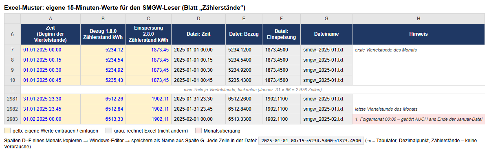
smgw_2025-01.txt.2025-01-01 00:15⇥5234.5400⇥1873.4500 (⇥ = Tabulator; Excel setzt ihn beim Kopieren mehrerer Spalten selbst, ohne Anführungszeichen).Die Formeln der Musterdatei sind sprachunabhängig (keine Formatcodes wie „JJJJ“/„yyyy“); getestet mit einem deutschen Excel (Version 16). Die Hinweise aus 11.7 gelten unverändert – vor allem: nur Werte vom Hauptzähler des Netzbetreibers und nie einen Monat überschreiben, für den das Gateway schon eine Datei hat; für den Monat, in dem das Gateway begann, kommen die Tage davor in die Ergänzung (11.6, gleiches Zeilenformat).
Gerechnet wird je Viertelstunde und erst die Summe gerundet.
Beim Vergleich mit einer eigenen Tabelle oder der Lieferantenrechnung zuerst diese Punkte prüfen: